🔥
⚡
Ông Trump gây tranh cãi khi nói cứ để Iran 'xóa sổ' Los Angeles và San Diego
Ông Trump tại sân bay Central Nebraska Regional ở thành phố Grand Island, bang Nebraska, ngày 5-10 - Ảnh: AFP Theo Hãng tin Reuters ngày 5-10, Tổng thống Donald Trump đưa ra phát biểu gây tranh cãi tại một cuộc vận động
⚡
⚡
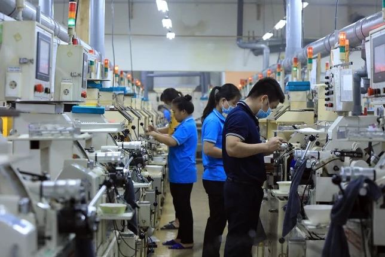
🔥
🔥
🔥
🔥
⚡
Xe buýt điện tăng tốc hiện diện tại các đô thị trên toàn thế giới: Canada đặt thêm 120 xe buýt điện, VinFast đưa xe đến Mỹ
Xe buýt điện tăng tốc hiện diện tại các đô thị trên toàn thế giới: Canada đặt thêm 120 xe buýt điện, VinFast đưa xe đến Mỹ Theo Diệp Vy | 06/10/2026 20:51 PM | Kinh doanh Theo dõi Cafebiz.vn trên Từ Ottawa đến Metro Mani
⚡
⚡
🔥
🔥
Nhà đầu tư Mỹ tìm hiểu ngành robot Tại Trung Quốc và lo ngại cho Silicon Valley
Nhà đầu tư Mỹ kéo nhau sang Trung Quốc tìm hiểu về ngành robot, phát hiện điều khiến Silicon Valley lo ngại Vũ Hoàng | 06/10/2026 13:01 PM | Công nghệ Theo dõi Cafebiz.vn trên Tại Thung lũng Silicon, các nhà đầu tư Mỹ đa
🔥
🔥
Huawei từng trả tiền cho Qualcomm, 25 năm sau đến lượt ông lớn Mỹ trả tiền cho sáng chế Trung Quốc
Huawei từng trả tiền cho Qualcomm, 25 năm sau đến lượt ông lớn Mỹ phải trả tiền để dùng sáng chế Trung Quốc Vũ Hoàng | 06/10/2026 16:14 PM | Công nghệ Theo dõi Cafebiz.vn trên 25 năm trước Huawei trả tiền cho Qualcomm để
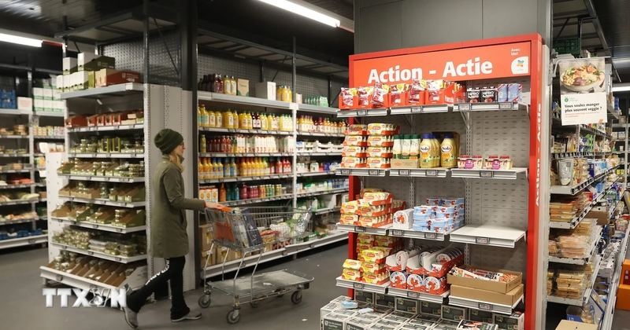
🔥Năng lượng, lạm phát và chi phí đi vay tạo áp lực lớn lên kinh tế Eurozone
Facebook Twitter Lưu bài viết Bản in Copy link Chi phí năng lượng đắt đỏ, áp lực lạm phát và chi phí đi vay gia tăng đang cùng lúc hợp thành “cơn gió ngược” mạnh mẽ, đe dọa hãm phanh đà phục hồi kinh tế của Khu vực đồng
🔥
🔥
Căng thẳng Trung Đông gia tăng, Mỹ duyệt bán hơn 1 tỷ USD vũ khí cho UAE, Kuwait
Đài CNA trích dẫn tuyên bố ngày 5/10 của Bộ Ngoại giao Mỹ cho biết: "Thương vụ đề xuất này sẽ nâng cao năng lực của UAE trong việc ứng phó với các mối đe dọa hiện tại và tương lai thông qua việc phát triển và duy trì khả
⚡
VNPT triển khai chương trình dự thưởng với tổng giải thưởng hơn 1,6 tỷ đồng
Các giải thưởng gồm điện thoại Samsung Galaxy Z Fold8 Ultra 256GB, xe máy điện VinFast Feliz II, robot hút bụi Xiaomi Vacuum H50, đồng hồ Garmin Venu 3 và tai nghe AirPods Pro 3. Theo VNPT, số lượng mã dự thưởng được phâ
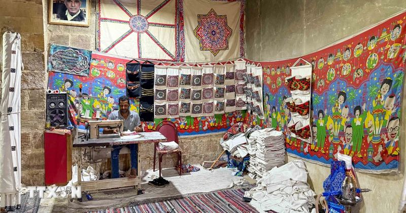
🔥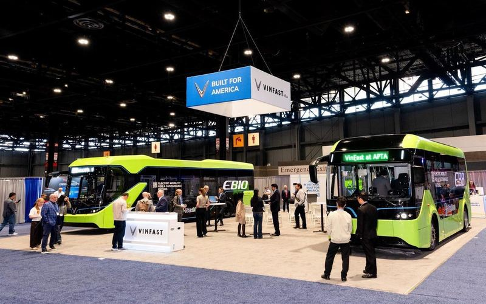
🔥
🔥
⚡
Tỷ phú Việt SN 1966 "thét ra lửa" ở Phố Wall, từng nằm trong HĐQT Getty Images, chi 1.000 tỷ mua penthouse tháp chọc trời Trump World Tower
Tỷ phú Việt SN 1966 "thét ra lửa" ở Phố Wall, từng nằm trong HĐQT Getty Images, chi 1.000 tỷ mua penthouse tháp chọc trời Trump World Tower Giả Hủ | 06/10/2026 20:20 PM | Sống Theo dõi Cafebiz.vn trên Từ Blackstone đến C
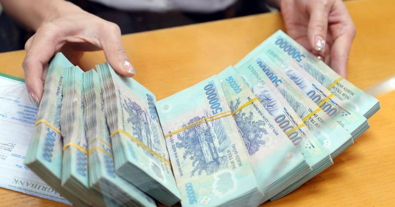
⚡Loạt ngân hàng huy động lãi suất trên 9%/năm với quy mô hàng nghìn tỷ đồng
Loạt ngân hàng huy động lãi suất trên 9%/năm với quy mô hàng nghìn tỷ đồng Theo Quang Hưng | 06/10/2026 20:00 PM | Kinh doanh Theo dõi Cafebiz.vn trên Trong tháng 9/2026, nhiều ngân hàng đẩy mạnh huy động vốn qua kênh tr
⚡
Nga và WHO thông tin mới về dịch hạch sau ca tử vong bí ẩn, Mỹ lên tiếng
Người phát ngôn Điện Kremlin Dmitry Peskov - Ảnh: TASS Ngày 6-10, người phát ngôn Điện Kremlin Dmitry Peskov cho biết Nga hoan nghênh đề nghị hỗ trợ của Tổng thống Mỹ Donald Trump sau khi một nhân viên tại viện nghiên cứ
⚡
⚡
⚡
Bàn giao mặt bằng cao tốc TP.HCM - Thủ Dầu Một - Chơn Thành trên 95%, cần đẩy nhanh triển khai
Ông Hoàng Nguyên Dinh - Ủy viên Ban Thường vụ Thành ủy, Phó chủ tịch UBND TP.HCM - chủ trì làm việc với các xã, phường và cơ quan liên quan để đẩy nhanh tiến độ dự án cao tốc TP.HCM - Thủ Dầu Một - Chơn Thành chiều 6-10
⚡
Loạt ngân hàng VPBank, Techcombank, ACB,... tăng lãi suất cơ sở, lãi suất tham chiếu
Loạt ngân hàng VPBank, Techcombank, ACB,... tăng lãi suất cơ sở, lãi suất tham chiếu Theo Minh Vy | 06/10/2026 18:45 PM | Kinh doanh Theo dõi Cafebiz.vn trên Sau làn sóng tăng lãi suất huy động, lãi suất cơ sở và lãi suấ
⚡
⚡
Tổng thống Mỹ Trump ra lệnh tử hình hung thủ xả súng trong căn cứ quân sự
Tử tù Nidal Hasan. (Ảnh: Getty Images) Người phát ngôn Lầu Năm Góc Sean Parnell thông báo trên mạng xã hội X, rằng việc tử hình cựu Thiếu tá Quân đội Nidal Hasan bằng hình thức xử bắn đã được Tổng thống Trump phê chuẩn t
⚡
🔥
Đại học tăng tốc đầu tư AI, doanh nghiệp vẫn thiếu nhân lực đáp ứng yêu cầu
Facebook Twitter Lưu bài viết Bản in Copy link Việt Nam nằm trong nhóm thị trường có tốc độ ứng dụng trí tuệ nhân tạo (AI) cao. Trong đó, 96% lãnh đạo các cơ sở giáo dục đại học được khảo sát cho biết đơn vị đang đầu tư
🔥
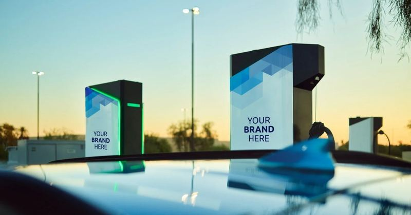
🔥
🔥
🔥
🔥
⚡
Đường sắt cao tốc sử dụng công nghệ Shinkansen có vốn gần 20 tỷ USD, vận tốc 320 km/h chậm tiến độ, nhà tài trợ Nhật Bản không hài lòng
Đường sắt cao tốc sử dụng công nghệ Shinkansen có vốn gần 20 tỷ USD, vận tốc 320 km/h chậm tiến độ, nhà tài trợ Nhật Bản không hài lòng Theo Y Vân | 06/10/2026 21:00 PM | Kinh doanh Theo dõi Cafebiz.vn trên Khoảng 81% ch
⚡
VCCI ký kết hợp tác với Tây Ninh về cải thiện môi trường đầu tư và phát triển doanh nghiệp
Lãnh đạo tỉnh Tây Ninh và VCCI thực hiện nghi thức ký kết biên bản ghi nhớ hợp tác Việc ký kết thỏa thuận là cơ sở để tỉnh Tây Ninh thực hiện các mục tiêu chiến lược trong thu hút đầu tư, cải thiện môi trường kinh doanh.
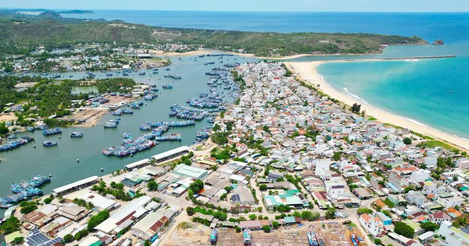
⚡
⚡
VNPT nâng cấp trải nghiệm internet, trao cơ hội nhận quà công nghệ hơn 1,6 tỷ đồng
Với chương trình “Siêu tốc độ-Siêu ưu đãi”, khách hàng đăng ký mới, nâng cấp hoặc gia hạn gói cước internet VNPT trong thời gian khuyến mại sẽ có cơ hội nhận các giải thưởng công nghệ như điện thoại Samsung Galaxy Z Fold
⚡
Thu gần 224.700 tỷ đồng từ thương mại điện tử và hộ kinh doanh trong 9 tháng
Ông Lê Long, Phó Cục trưởng Cục Thuế. Ảnh: Kiều Chinh/Mekong ASEAN. Ngày 6/10, tại họp báo thường kỳ quý 3/2026 của Bộ Tài chính, ông Lê Long, Phó Cục trưởng Cục Thuế cho biết, dự toán thu ngân sách Nhà nước năm 2026 đượ
🔥
🔥
🔥
VIB triển khai kế hoạch huy động 1 tỷ USD vốn quốc tế, hoàn tất khoản vay 285 triệu USD
TIN MỚI Chi phí vốn cạnh tranh, mở rộng hợp tác quốc tế và củng cố niềm tin của các đối tác Giao dịch được đồng thu xếp bởi United Overseas Bank Limited (UOB), Maybank Securities Pte. Ltd. (Maybank), Cathay United Bank C
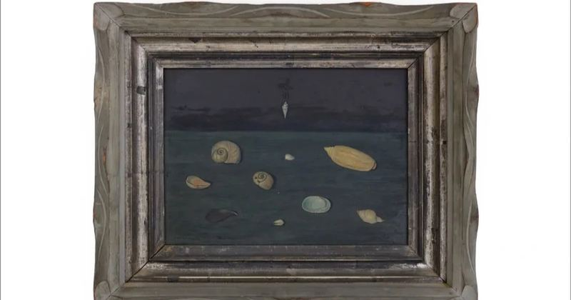
🔥
🔥
SePay hợp tác VPBank SME triển khai gói vay thấu chi tín chấp cho doanh nghiệp VPBank
TIN MỚI Đây là giải pháp được tích hợp trực tiếp trên hệ thống SePay, nơi doanh nghiệp đang sử dụng để quản lý dòng tiền và các hoạt động thanh toán hằng ngày. Thay vì thực hiện riêng từng công đoạn tại ngân hàng, doanh
🔥
Ông Trump: Mỹ rút oanh tạc cơ khỏi Anh do 'mối đe dọa liên quan đến Iran'
Ông Trump: Mỹ rút oanh tạc cơ khỏi Anh do 'mối đe dọa liên quan đến Iran' Tổng thống Trump xác nhận Mỹ rút toàn bộ oanh tạc cơ B-1B khỏi căn cứ Fairford ở Anh do xuất hiện những mối đe dọa "liên quan đến Iran". "Đã có mộ
🔥
Các hãng xe Trung Quốc đổ nhà máy vào ASEAN: Người mua trong khu vực có đủ sức hấp thụ sản lượng?
TIN MỚI Các hãng xe Trung Quốc đang đẩy mạnh xây dựng nhà máy tại Đông Nam Á, với sự hiện diện ngày càng rộng của BYD, Chery, Jaecoo, Wuling, Geely, Great Wall Motor và SAIC. Mục tiêu không chỉ là phục vụ thị trường nội
🔥
🔥
🔥
Ngân hàng lớn tiếp tục hạ dự báo giá vàng 2026: Hết thời cứ mua là có lãi?
(Dân trí) - Sau đợt tăng nóng, hàng loạt ngân hàng phố Wall bất ngờ hạ dự báo giá vàng năm 2026. Giới đầu tư buộc phải đối mặt với thực tế: hành trình đi lên của kim loại quý sẽ không còn dễ ăn như trước. Sau năm 2025 tă
🔥
Chuyên gia Mirae Asset gọi tên 2 cổ phiếu tiềm năng giữa môi trường lãi suất tăng cao
TIN MỚI Khi “tiền đắt” trở thành phép thử với doanh nghiệp GDP quý 3/2026 tăng 9,95%, đưa tăng trưởng 9 tháng lên 9,01%, nhưng diễn biến tích cực của nền kinh tế không đồng nghĩa tất cả doanh nghiệp niêm yết đều hưởng lợ
⚡
Luật Phát triển doanh nghiệp nhỏ & vừa: Kiến tạo môi trường kinh doanh thuận lợi
Facebook Twitter Lưu bài viết Bản in Copy link Ngày 6/10, Bộ Tài chính tổ chức họp báo quý 3, trong đó những điểm mới của dự thảo Luật Phát triển doanh nghiệp nhỏ và vừa đã bà Trịnh Thị Hương, Phó Cục trưởng Cục Phát tri
⚡
Sailun tăng ba bậc trong top 500 thương hiệu có ảnh hưởng nhất châu Á 2026
Chứng nhận do World Brand Lab cấp ngày 20-9-2026, ghi nhận Sailun ở vị trí 313 - Ảnh: DNCC Kết quả ghi nhận quá trình Sailun mở rộng ảnh hưởng thương hiệu dựa trên đầu tư công nghệ, năng lực sản xuất toàn cầu và sự hiện
🔥
🔥
🔥
🔥
🔥
🔥
Ông Trump hứng chỉ trích vì phát biểu 'để Iran xóa sổ Los Angeles, San Diego'
Ông Trump hứng chỉ trích vì phát biểu 'để Iran xóa sổ Los Angeles, San Diego' Ông Trump nói rằng Iran xóa sổ Los Angeles và San Diego, hai thành phố lớn nhất bang California, là cái giá rất nhỏ cho an toàn của nước Mỹ. T
🔥
🔥
Nhìn qua tưởng sàn chứng khoán New York, hóa ra đây lại là chợ hoa bán 15,4 tỷ cành/năm ở Trung Quốc
Nhìn qua tưởng sàn chứng khoán New York, hóa ra đây lại là chợ hoa bán 15,4 tỷ cành/năm ở Trung Quốc Thiên Minh | 06/10/2026 10:38 AM | Công nghệ Theo dõi Cafebiz.vn trên Tưởng sàn chứng khoán New York, hóa ra là Trung t
🔥
🔥
⚡
Chuyển hóa tin cậy chính trị thành chiến lược cụ thể gắn kết kinh tế Việt Nam-Campuchia
Nhận lời mời của Thủ tướng Vương quốc Campuchia Hun Manet, Thủ tướng Chính phủ nước Cộng hòa xã hội chủ nghĩa Việt Nam Lê Minh Hưng sẽ dẫn đầu Đoàn đại biểu cấp cao Việt Nam thăm chính thức Vương quốc Campuchia từ ngày 9
⚡
⚡
⚡
Nông, lâm nghiệp và thủy sản giữ nhịp tăng trưởng, củng cố trụ đỡ nền kinh tế
Nông, lâm nghiệp và thủy sản tăng 4,02% trong 9 tháng năm 2026, cao nhất kể từ năm 2019, khẳng định vai trò trụ đỡ của nền kinh tế. Động lực đến từ thủy sản, chăn nuôi, cây lâu năm và chuyển dịch cơ cấu, nâng giá trị sản
⚡
⚡
⚡
⚡
⚡
Khám phá siêu bệnh viện AI tại Hải Nam: Tiên phong trong điều trị và kết nối sức khỏe
Phía sau ‘siêu bệnh viện AI’ ở Hải Nam: Giúp người bệnh tìm thuốc, kết nối bác sĩ và bớt đi lại Minh Ngọc | 06/10/2026 20:09 PM | Sống Theo dõi Cafebiz.vn trên Ra mắt tại Hải Nam, Trung Quốc, “Super AI Hospital” sử dụng
⚡
⚡
⚡
Bộ Tài chính yêu cầu xử lý triệt để trường hợp mạo danh lập doanh nghiệp
Facebook Twitter Lưu bài viết Bản in Copy link Tại họp báo thường kỳ chiều 6/10, lãnh đạo Bộ Tài chính yêu cầu khẩn trương xử lý triệt để các trường hợp bị mạo danh thành lập doanh nghiệp, tuyệt đối không để kéo dài. Thô
⚡
⚡
 ⚡
⚡
⚡
Con trai bà Thái Hương được Bac A Bank cấp thẻ tín dụng hạn mức 500 triệu đồng
Con trai bà Thái Hương được Bac A Bank cấp thẻ tín dụng hạn mức 500 triệu đồng Lệ Chi | 06/10/2026 18:28 PM | Kinh doanh Theo dõi Cafebiz.vn trên Ngân hàng TMCP Bắc Á (Bac A Bank) vừa thông qua việc cấp thẻ tín dụng hạng
⚡
Bộ Tài chính nói về gỡ khó cho 4.000 trường hợp bị mạo danh lập doanh nghiệp
Theo Cục Thuế (Bộ Tài chính), trong quá trình triển khai chiến dịch làm sạch mã số thuế, thông qua đường dây nóng và ứng dụng eTax Mobile, đến nay, ngành thuế đã ghi nhận khoảng 4.000 phản ánh của người dân về việc bị mạ
🔥
Chủ tịch FPT Retail Nguyễn Bạch Điệp vào Top 100 Phụ nữ quyền lực nhất châu Á 2026 của Fortune
Danh sách Most Powerful Women Asia 2026 do Fortune công bố ngày 6.10, ghi nhận 100 nữ lãnh đạo có tầm ảnh hưởng đến hoạt động kinh doanh và kinh tế tại 14 thị trường châu Á. Bà Nguyễn Bạch Điệp là một trong 24 gương mặt
🔥
Từ khai thác biển sang quản trị không gian biển, mở rộng dư địa tăng trưởng
Nghị quyết số 20- NQ/TW và Nghị quyết số 218/NQ- CP mở ra bước chuyển trong tư duy phát triển kinh tế biển, từ khai thác tài nguyên sang quản trị không gian biển. Hoàn thiện thể chế, hạ tầng, logistics, năng lượng ngoài
🔥
🔥
24 tuổi, bỏ OpenAI để đặt cược vào AGI, từng được định giá 45 tỷ USD rồi phải bán tài sản cho tỷ phú Ken Griffin
24 tuổi, bỏ OpenAI để đặt cược vào AGI, từng được định giá 45 tỷ USD rồi phải bán tài sản cho tỷ phú Ken Griffin Vũ Hoàng | 06/10/2026 12:54 PM | Công nghệ Theo dõi Cafebiz.vn trên Chàng trai 24 tuổi này tin AGI sẽ đến v
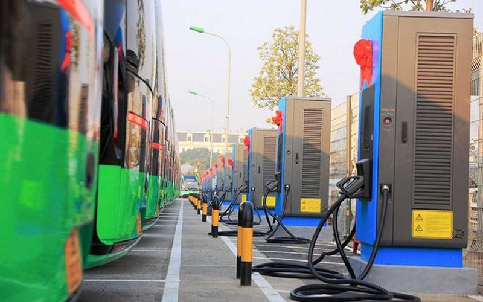
🔥Trạm sạc xe điện cần sẵn sàng về kỹ thuật cho nhiều loại xe điện khác nhau
Trạm sạc xe điện cần sẵn sàng về kỹ thuật cho nhiều loại xe điện khác nhau Phan Trang | 06/10/2026 09:25 AM | Kinh doanh Theo dõi Cafebiz.vn trên Từ 1/7/2027, trạm sạc công cộng phải được thiết kế về mặt kỹ thuật sẵn sàn
🔥
🔥
Cận cảnh robot Trung Quốc đến Hà Nội nhảy múa “Hello Vietnam”, giá bán hơn 1 tỷ đồng
TIN MỚI Trong khuôn khổ các hoạt động hưởng ứng Ngày hội Đổi mới sáng tạo Quốc gia năm 2026, ngày 2/10, tại “Hội nghị AI hiện thân Việt Nam lần thứ nhất", tâm điểm khiến nhiều người chú ý là sự xuất hiện của robot hình n
🔥
Tên lửa HQ-9BE Trung Quốc công nghệ dẫn đường 3 chế độ, đe dọa mọi mục tiêu
Tại triển lãm quốc phòng quốc tế ADEX 2026 diễn ra từ ngày 30/9 - 2/10/2026 tại Trung tâm Expo Baku, Azerbaijan đã chính thức trưng bày hệ thống tên lửa phòng không tầm xa HQ-9BE do Trung Quốc sản xuất. 'Mắt thần' AI giá
⚡
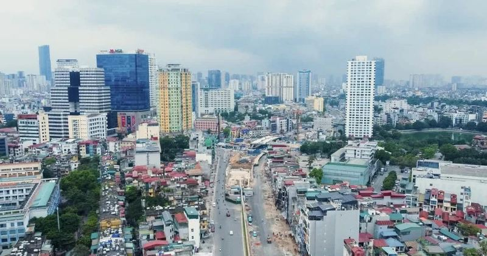
⚡
⚡
Phú Thọ tính xây cầu Hai Bà Trưng và đường mới từ trung tâm tỉnh đi cao tốc Nội Bài - Lào Cai
Lãnh đạo Sở Xây dựng tỉnh Phú Thọ báo cáo phương án quy hoạch hướng tuyến công trình cầu Hai Bà Trưng qua sông Lô - Ảnh: Báo Phú Thọ Ngày 6-10, Phó chủ tịch UBND tỉnh Phú Thọ Quách Tất Liêm cùng lãnh đạo các sở, ngành, đ
⚡
Tất cả người dân chú ý mức phạt 20 triệu đồng liên quan đến khai báo tạm trú
Tất cả người dân chú ý mức phạt 20 triệu đồng liên quan đến khai báo tạm trú Theo Duy Anh | 06/10/2026 19:20 PM | Xã hội Theo dõi Cafebiz.vn trên Theo quy định hiện hành, các cơ sở lưu trú không thực hiện khai báo cho 9
⚡
Chicilon bắt tay cùng NEX Brain™ mở rộng giải pháp tăng trưởng thương hiệu tại Việt Nam
Chicilon bắt tay cùng NEX Brain™ mở rộng giải pháp tăng trưởng thương hiệu tại Việt Nam Ánh Dương | 06/10/2026 18:30 PM | Kinh doanh Theo dõi Cafebiz.vn trên Kết nối truyền thông, dữ liệu và AI, thúc đẩy thương hiệu từ “
⚡
🔥
🔥
Nhà khoa học Mỹ giành giải Nobel Vật lý nhờ tìm ra hạt vô hình từ vũ trụ
Nhà khoa học Mỹ gốc Bỉ Francis Halzen Ông Francis Halzen nhận ra rằng băng ở Nam cực có thể được sử dụng để theo dõi các hạt được gọi là neutrino. Tầm nhìn và vai trò lãnh đạo khoa học của ông có ý nghĩa nền tảng đối với
🔥
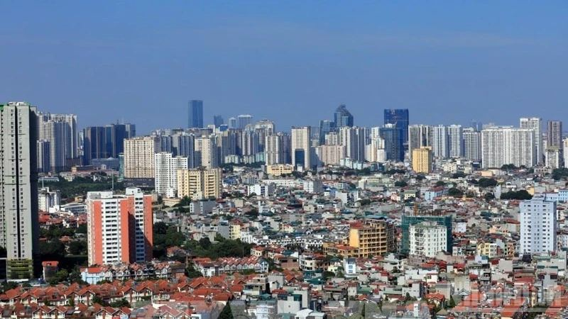
🔥Việt Nam dẫn đầu châu Á-Thái Bình Dương về quy mô phát triển bất động sản hàng hiệu
Cụ thể, phân khúc thị trường bất động sản này tại châu Á-Thái Bình Dương đang bước vào giai đoạn phát triển mới, khi động lực tăng trưởng ngày càng đến từ nền tảng tài sản và nhu cầu của người mua trong nước, thay vì phụ
🔥
Đồng Nai "nước rút" quý cuối năm, hướng tới mục tiêu tăng trưởng GRDP 11%
Facebook Twitter Lưu bài viết Bản in Copy link Sau 9 tháng, GRDP Đồng Nai tăng 10,01%, nhưng để đạt mục tiêu tăng trưởng 11% cả năm 2026, thành phố phải tạo thêm động lực trong quý 4. Trọng tâm được xác định là đẩy nhanh
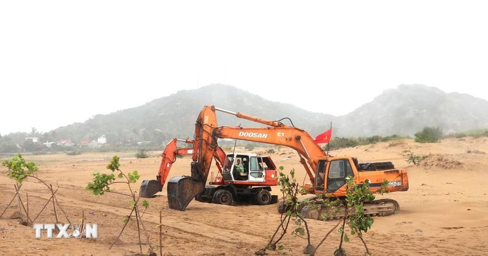
🔥Đắk Lắk khơi thông dòng vốn trọng điểm, chuyển cam kết thành dự án thực tế
Facebook Twitter Lưu bài viết Bản in Copy link Tỉnh Đắk Lắk đã triển khai nhiều chính sách nhằm nâng cao hiệu quả thu hút đầu tư; trong đó tập trung tháo gỡ khó khăn, vướng mắc và tạo thuận lợi để các doanh nghiệp, nhà đ
🔥
Giá gốc hơn 2.500 đồng/cổ phiếu, một doanh nghiệp sắp chốt lời MBB gấp 8 lần
Agtex 28 dự kiến bán 2,5 triệu cổ phiếu MBB với giá tối thiểu 20.290 đồng/cổ phiếu - Ảnh: MBB Chốt lãi gấp 8 lần giá gốc Mới đây, Công ty TNHH MTV Tổng công ty 28 (Agtex 28) ban hành quyết định phê duyệt phương án chuyển
🔥
🔥
Con trai bầu Thụy tham gia lãnh đạo, sàn tài sản mã hóa Sacom gọi thêm vốn từ Chứng khoán LPS
TIN MỚI Theo nghị quyết, HĐQT LPS giao và ủy quyền cho Tổng giám đốc chỉ đạo các đơn vị, cá nhân liên quan triển khai các công việc cần thiết sau khi giao dịch được HĐQT phê duyệt. Động thái này diễn ra trong bối cảnh SC
🔥
Thông tin mới về công tác chuẩn bị triển khai tuyến cao tốc dài gần 180km, chỉ đi qua 1 tỉnh duy nhất
Thông tin mới về công tác chuẩn bị triển khai tuyến cao tốc dài gần 180km, chỉ đi qua 1 tỉnh duy nhất Theo Ngọc Khánh | 06/10/2026 13:33 PM | Kinh tế vĩ mô Theo dõi Cafebiz.vn trên Tuyến cao tốc có điểm đầu giao với quốc
🔥
🔥
Chu kỳ mới của thị trường bất động sản: Từ 'đón sóng' sang khai thác hiệu quả
Chu kỳ mới của thị trường bất động sản: Từ 'đón sóng' sang khai thác hiệu quả Theo ĐẠI VIỆT | 06/10/2026 11:55 AM | Xã hội Theo dõi Cafebiz.vn trên Thị trường bất động sản đang bước vào giai đoạn mà kỳ vọng tăng giá khôn
🔥
Loạt ngân hàng huy động lãi suất trên 9%/năm với quy mô hàng nghìn tỷ đồng
TIN MỚI Theo số liệu công bố của HNX, trong tháng 9/2026 có 12 ngân hàng phát hành trái phiếu, với tổng giá trị 35.160 tỷ đồng. Hoạt động phát hành tập trung vào nửa cuối tháng, khi nhiều ngân hàng liên tiếp đưa ra các l
 🔥
🔥
Cận cảnh robot Trung Quốc đến Hà Nội nhảy múa “Hello Vietnam”, giá bán hơn 1 tỷ đồng
Cận cảnh robot Trung Quốc đến Hà Nội nhảy múa “Hello Vietnam”, giá bán hơn 1 tỷ đồng Theo Minh Hằng | 06/10/2026 10:22 AM | Công nghệ Theo dõi Cafebiz.vn trên Đây là một trong những robot hình người hiện đại nhất của Agi
🔥
🔥
Báo Mỹ: Israel có thể sẵn sàng bắn máy bay Flydubai nếu tiến gần lãnh thổ
(Dân trí) - Israel dường như đã sẵn sàng bắn hạ một máy bay của hãng Flydubai sau khi máy bay phát tín hiệu bất thường và di chuyển về phía Israel hôm 30/9. Máy bay Flydubai (Ảnh: Reuters). Hãng tin CBS News dẫn nguồn th
🔥
🔥
🔥
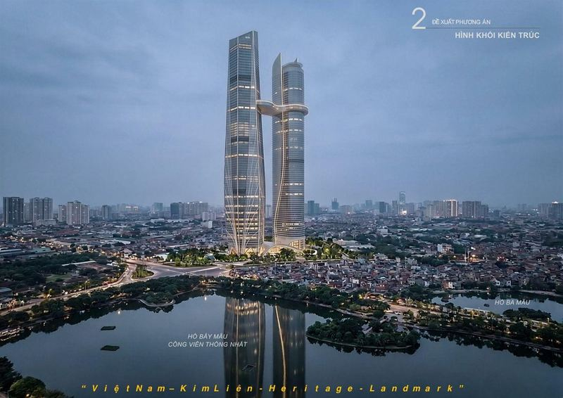
🔥Doanh nghiệp đề xuất xây tòa tháp đôi cao nhất thế giới bất ngờ muốn rót thêm tiền vào Thaigroup
Doanh nghiệp đề xuất xây tòa tháp đôi cao nhất thế giới bất ngờ muốn rót thêm tiền vào Thaigroup Theo An Thái | 06/10/2026 07:23 AM | Kinh doanh Theo dõi Cafebiz.vn trên Doanh nghiệp đăng ký mua thêm 78,32 triệu cổ phần
🔥
🔥
Báo Mỹ: 'Lỗ hổng bảo mật' là nguyên nhân dẫn đến vụ tấn công trên chuyến bay Flydubai
Sự cố xảy ra hôm 30/9 trên chiếc Boeing 737 MAX 8 của Flydubai, chở khoảng 180 hành khách và thành viên phi hành đoàn từ Dubai đến sân bay Ben Gurion, Israel. Khoảng hai giờ sau khi cất cánh, cơ phó Hammami xin phép cơ t
🔥
🔥
Hé lộ về loại đầu đạn đặc biệt được Nga dùng để tấn công cầu đường của Ukraine
Trang tin quân sự Defense Express ngày 4/10 đưa tin quân đội Ukraine mới đây đã xác nhận việc Nga sử dụng đầu đạn KRSN (đầu đạn cắt lõm) trên UAV cảm tử Geran-4 để tấn công các cây cầu quan trọng của Kiev. "KRSN là một l
🔥
🔥
🔥
Doanh nghiệp đề xuất xây tòa tháp đôi cao nhất thế giới bất ngờ muốn rót thêm tiền vào Thaigroup
TIN MỚI Hội đồng quản trị Công ty Cổ phần Thaiholdings (mã chứng khoán: THD) vừa thông qua việc đăng ký mua thêm cổ phần tại Công ty CP - Tập đoàn Thaigroup trong đợt chào bán cho cổ đông hiện hữu. Theo nghị quyết, Thaih
 🔥
🔥
⚡
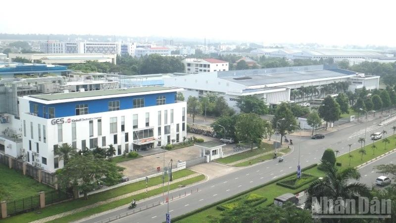
⚡
⚡
Con 4 tuổi da vàng như nghệ phải thay gan: Mẹ “sốc” khi biết căn bệnh phía sau
Con 4 tuổi da vàng như nghệ phải thay gan: Mẹ “sốc” khi biết căn bệnh phía sau Theo Ngọc Minh | 06/10/2026 20:15 PM | Sống Theo dõi Cafebiz.vn trên Suốt 4 năm qua, cậu bé gần như chưa từng có một giấc ngủ xuyên đêm, có n
⚡
⚡
⚡
Trung ương Đảng thảo luận Quy định về đảng viên tham gia hoạt động đầu tư, kinh doanh
Quang cảnh Hội nghị Trung ương 4 - Ảnh: TTXVN Theo thông cáo của Văn phòng Trung ương Đảng, ngày 6-10, Hội nghị lần thứ 4 Ban Chấp hành Trung ương Đảng khóa XIV tiếp tục ngày làm việc thứ hai. Buổi sáng, Tổng Bí thư, Chủ
⚡
Bộ Tài chính thông tin về chấm điểm KPI giải ngân đầu tư công trên hệ thống
Facebook Twitter Lưu bài viết Bản in Copy link Tại cuộc họp báo thường kỳ quý 3/2026 diễn ra ngày 6/10, bà Nguyễn Thị Quế Hương, Phó Vụ trưởng Vụ Phát triển hạ tầng (Bộ Tài chính) đã cung cấp thông tin về việc chấm điểm
🔥
Ông Trump gây tranh cãi khi nói Iran có thể ‘tiêu diệt’ Los Angeles, San Diego
Theo Los Angeles Times , phát biểu trước đám đông tại Grand Island (bang Nebraska, Mỹ) ngày 5.10, Tổng thống Trump kêu gọi cử tri mang lại chiến thắng áp đảo cho đảng Cộng hòa trong cuộc bầu cử giữa nhiệm kỳ tháng 11, ch
🔥
MB trở thành ngân hàng đầu tiên tại Việt Nam vượt 100.000 tỉ đồng vốn điều lệ
Thành lập năm 1994 với vốn điều lệ 20 tỉ đồng và 25 nhân sự, sau 32 năm, vốn điều lệ MB đã tăng hơn 5.000 lần. Đến 30.6.2026, tổng tài sản ngân hàng vượt 1,73 triệu tỉ đồng. Giai đoạn 2015 - 2025, tổng tài sản tăng bình
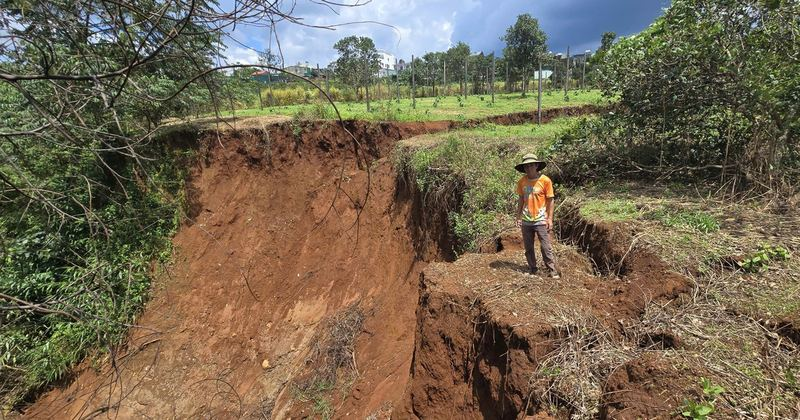
🔥Đất nứt toác, sụt sâu gây nguy hiểm giữa vùng trồng cà phê, sầu riêng ở Gia Lai
Ngày 6.10, UBND xã Đức Cơ cho biết vừa có báo cáo gửi Sở Nông nghiệp và Môi trường Gia Lai về việc khu vực đất ở thôn Chư Ty 4 bị sụt lún , biến dạng nằm sát suối, cách đường liên xã khoảng 70 m về phía bắc và cách đường
🔥
🔥
🔥
🔥
🔥
Chủ động phòng ngừa ngập lụt, lũ quét, sạt lở, bảo đảm an toàn giao thông
Theo Cục Đường bộ Việt Nam, trước nguy cơ mực nước sông, suối dâng cao, gây ngập lụt, sạt lở và hư hỏng các công trình đường bộ, các Khu Quản lý đường bộ I, II, III, IV; Sở Xây dựng các tỉnh, thành phố; Tổng công ty Đầu
🔥
🔥
🔥
🔥
🔥
🔥
🔥
🔥
🔥
Một địa phương ghi nhận tăng trưởng GRDP cán mốc hai con số lần đầu tiên trong năm
Một địa phương ghi nhận tăng trưởng GRDP cán mốc hai con số lần đầu tiên trong năm Theo Giang Anh | 06/10/2026 09:48 AM | Kinh tế vĩ mô Theo dõi Cafebiz.vn trên Lần đầu tiên trong năm, GRDP thành phố chạm ngưỡng tăng trư
🔥
Người tài SN 1996 vừa được Trung tâm tài chính quốc tế TP.HCM giao vị trí quan trọng: Từng lọt Forbes 30 Under 30, làm Giám đốc đầu tư ngân hàng lớn của Thái Lan
Người tài SN 1996 vừa được Trung tâm tài chính quốc tế TP.HCM giao vị trí quan trọng: Từng lọt Forbes 30 Under 30, làm Giám đốc đầu tư ngân hàng lớn của Thái Lan Theo Minh Vy | 06/10/2026 09:46 AM | Kinh doanh Theo dõi C
🔥
Người tài SN 1996 vừa được Trung tâm tài chính quốc tế TP.HCM giao vị trí quan trọng: Từng lọt Forbes 30 Under 30, làm Giám đốc đầu tư tại tập đoàn lớn của Thái Lan
TIN MỚI Ngày 5/10, Trung tâm tài chính quốc tế Việt Nam tại TP.HCM (VIFC-HCMC) thông báo tiếp nhận ông Bùi Đức Anh đảm nhiệm vai trò Phó Ban Công nghệ, tham gia xây dựng hệ sinh thái công nghệ - dữ liệu và đổi mới sáng t
🔥
🔥
🔥
🔥
🔥
⚡
AFC lại có thay đổi, con đường đến World Cup của Việt Nam thêm phần gian nan
Tuyển Việt Nam sẽ đối mặt một lịch thi đấu cực kỳ phức tạp trong thời gian tới - Ảnh: ANH KHOA Vài ngày trước, hãng tin ESPN của Mỹ tiết lộ thông tin về kế hoạch cải tổ toàn diện các hệ thống giải đấu vòng loại World Cup
⚡
Bộ Ngoại giao Campuchia: Chuyến thăm của Thủ tướng Lê Minh Hưng củng cố hơn nữa quan hệ gắn bó giữa hai nước
Facebook Twitter Lưu bài viết Bản in Copy link Ngày 6/10, Bộ Ngoại giao và Hợp tác quốc tế Campuchia ra thông cáo cho biết, nhận lời mời của Thủ tướng Hun Manet, Thủ tướng Lê Minh Hưng sẽ thăm chính thức tới Vương quốc C
⚡
Fortune tiếp tục vinh danh bà Mai Kiều Liên trong danh sách 100 phụ nữ quyền lực nhất châu Á
Trong danh sách Most Powerful Women Asia 2026, Fortune xếp bà Mai Kiều Liên ở vị trí 71, tăng 2 bậc so với năm 2025 và 4 bậc so với lần đầu được vinh danh năm 2024. Trong ba năm liên tiếp góp mặt, thứ hạng của bà lần lượ
 ⚡
⚡
⚡
Sinh viên Việt Nam tự tin về AI nhưng còn khoảng cách khi ứng dụng vào thực tế
Thông tin trên được công bố ngày 6/10 tại Hà Nội trong báo cáo nghiên cứu về năng lực sẵn sàng ứng dụng AI của sinh viên Việt Nam từ giảng đường đến nơi làm việc. Nghiên cứu nằm trong chuỗi khảo sát được thực hiện tại 6
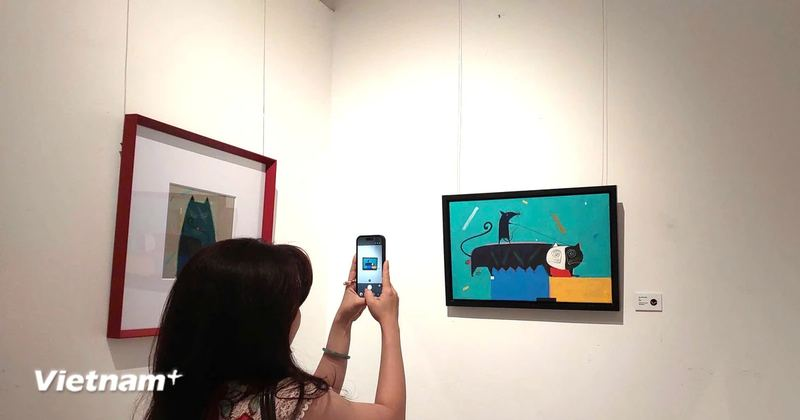
⚡Khám phá muôn mặt đời sống qua những bức tranh vẽ mèo của Phan Hiền Nhân
Facebook Twitter Lưu bài viết Bản in Copy link Trong đời sống hội họa, mèo từng xuất hiện trong nhiều triển lãm nhưng với “CHATS,” công chúng yêu nghệ thuật được đắm chìm trong một thế giới nơi mèo không chỉ là đối tượng
⚡
⚡
⚡
Từ Ethiopian Airlines đến flydubai an toàn chuyến bay bắt đầu từ lịch làm của phi công
Từ Ethiopian Airlines đến flydubai: Vì sao an toàn chuyến bay bắt đầu từ lịch làm của phi công? Minh Ngọc | 06/10/2026 20:06 PM | Xã hội Theo dõi Cafebiz.vn trên Chuyến ET343 của Ethiopian Airlines năm 2022 bay qua sân b
⚡
Tưới xăng đốt quần áo gây cháy rụi 2 căn phòng vì vợ uống bia, gọi không về
Ngày 6/10, thông tin từ Công an xã M’Drắk, tỉnh Đắk Lắk, đơn vị đã khởi tố bị can, lệnh cấm đi khỏi nơi cư trú đối với Y Chương Byă (21 tuổi, trú xã M’Drắk) để điều tra về hành vi “Hủy hoại tài sản”. Y Chương Byă bị khởi
⚡
Trước khám xét 3 ngày, Tuấn ‘thần đèn’ gọi thủ quỹ: ‘Những gì không cần thiết thì hủy đi’
Tuấn "thần đèn" thời điểm bị bắt tạm giam - Ảnh: VTV Kết luận điều tra vụ án liên quan Nguyễn Anh Tuấn (Tuấn "thần đèn", thành viên góp vốn Công ty ALMA ) vừa được Cơ quan điều tra Bộ Công an ban h
⚡
[Video] Dự báo thời tiết đêm nay và ngày mai 7/10/2026: Trung Bộ mưa rất lớn, trọng tâm từ Huế đến Đà Nẵng
Tại Bắc Bộ, đêm nay thời tiết phổ biến ít mưa, về đêm và sáng sớm trời lạnh, vùng núi cao có nơi rét. Sang ngày mai, toàn miền chuyển tạnh ráo, có nắng, nền nhiệt tăng trở lại, thời tiết nhìn chung mát mẻ và dễ chịu. Tru
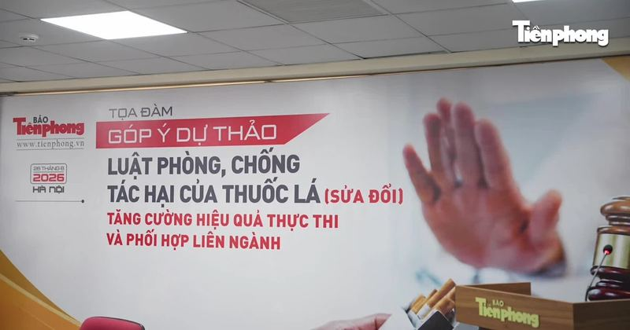
⚡Sửa Luật Phòng, chống tác hại của thuốc lá: Cân nhắc gánh nặng thực thi trong chính sách
Tại tọa đàm góp ý dự thảo Luật ngày 26/8 tại Hà Nội, các đại biểu thống nhất bảo vệ sức khỏe cộng đồng là ưu tiên cao nhất. Tuy nhiên, để mục tiêu này được triển khai bền vững và thực chất, chính sách cần đi cùng năng lự
⚡
 ⚡
⚡
Con trai bà Thái Hương được Bac A Bank cấp thẻ tín dụng hạn mức 500 triệu đồng
TIN MỚI Theo nghị quyết được HĐQT Bac A Bank, khoản tín dụng này có thời hạn 5 năm, không có tài sản bảo đảm và phục vụ mục đích tiêu dùng. Ban tổng giám đốc cùng các đơn vị liên quan được giao tổ chức thực hiện, đồng th
⚡
Ngày làm việc thứ hai Hội nghị lần thứ 4 Ban Chấp hành Trung ương Đảng khóa XIV
Hội nghị Trung ương 4 khóa XIV. Ảnh: TTXVN Theo thông cáo báo chí về ngày làm việc thứ hai, buổi sáng, đồng chí Tổng Bí thư, Chủ tịch nước Tô Lâm điều hành hội nghị. Trung ương và các đại biểu làm việc tại hội trường, th
⚡
Phó Chủ tịch nước Võ Thị Ánh Xuân: Khơi dậy tinh thần tự học, nâng tầm công tác khuyến học, khuyến tài trong giai đoạn mới
Facebook Twitter Lưu bài viết Bản in Copy link Chiều tối 6/10, tại Trụ sở Văn phòng Chủ tịch nước, Bí thư Trung ương Đảng, Phó Chủ tịch nước Võ Thị Ánh Xuân tiếp Đoàn đại biểu dự Đại hội biểu dương các mô hình học tập ti
⚡
⚡
⚡
⚡
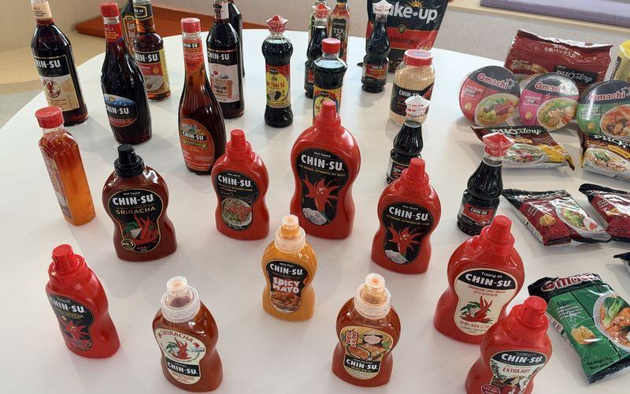
⚡Tỷ phú Nguyễn Đăng Quang sắp có thương vụ 400 triệu USD nâng sở hữu Masan Consumer
Tỷ phú Nguyễn Đăng Quang sắp có thương vụ 400 triệu USD nâng sở hữu Masan Consumer Theo Trường An | 06/10/2026 19:00 PM | Kinh doanh Theo dõi Cafebiz.vn trên Một công ty con của Masan Group đăng ký mua tối đa 73 triệu cổ
⚡
Khoảng 4.000 trường hợp người dân bị mạo danh thông tin cá nhân để lập doanh nghiệp
Trả lời câu hỏi về vướng mắc trong quá trình xóa mã số thuế và doanh nghiệp bị “ngâm” hồ sơ giải thể, ông Lê Long, Phó Cục trưởng Cục Thuế, cho biết cơ quan thuế vẫn đang tiến hành hỗ trợ tối đa cho các doanh nghiệp đã n
⚡
Tuyên tử hình kẻ sát hại 3 mẹ con ở Đồng Nai: Người thân của bị hại nghẹn ngào mong gia đình Nguyễn Đức Anh làm một việc
Tuyên tử hình kẻ sát hại 3 mẹ con ở Đồng Nai: Người thân của bị hại nghẹn ngào mong gia đình Nguyễn Đức Anh làm một việc Theo Nam An (t/h) | 06/10/2026 18:58 PM | Sống Theo dõi Cafebiz.vn trên Ngày 6/10, Tòa án nhân dân
⚡
⚡
Gấp rút hoàn thiện trận địa pháo hoa trên Hồ Tây, Hồ Hoàn Kiếm trước đêm 10/10
Theo ghi nhận của PV Tiền Phong , hiện tại công tác chuẩn bị trận địa pháo hoa trên mặt nước tại hồ Hoàn Kiếm cho đêm 10/10 đang được cấp tập triển khai. Cầu phao và các phương tiện nổi được sử dụng để tạo mặt bằng phục
⚡
⚡
Ngày làm việc thứ hai Hội nghị lần thứ tư Ban Chấp hành Trung ương Đảng khóa XIV
1. Buổi sáng, đồng chí Tổng Bí thư, Chủ tịch nước Tô Lâm điều hành Hội nghị. Trung ương và các đại biểu làm việc tại Hội trường, thảo luận về 3 nội dung: (1) Đề án xây dựng Nghị quyết của Ban Chấp hành Trung ương Đảng về
 ⚡
⚡
⚡
Tiếp tục nghiên cứu, đề xuất cơ chế vận hành thông suốt thị trường chứng khoán
Cùng với lộ trình chuyển cổ phiếu từ HNX sang HOSE, Uỷ ban Chứng khoán Nhà nước đang nghiên cứu phân bảng cổ phiếu và nhiều cơ chế giao dịch mới. Mục tiêu là tạo thuận lợi hơn cho nhà đầu tư nhưng vẫn bảo đảm hệ thống vậ
⚡
⚡
Thông cáo báo chí về ngày làm việc thứ hai Hội nghị lần thứ tư Ban Chấp hành Trung ương Đảng khoá XIV
Facebook Twitter Lưu bài viết Bản in Copy link Ngày 6/10/2026, Hội nghị lần thứ tư Ban Chấp hành Trung ương Đảng khoá XIV tiếp tục ngày làm việc thứ hai. - Buổi sáng, đồng chí Tổng Bí thư, Chủ tịch nước Tô Lâm điều hành
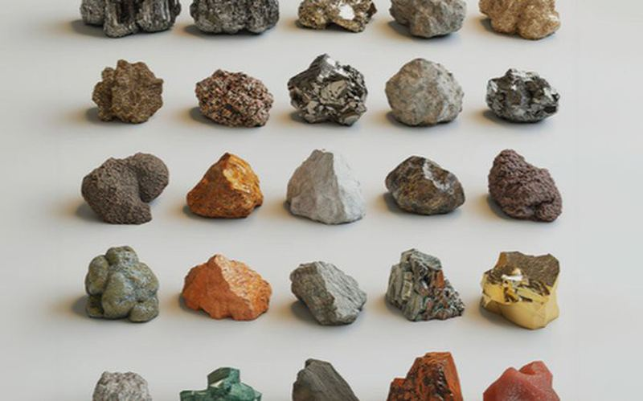
⚡Việt Nam tính mở xuất khẩu loại kho báu cả thế giới săn lùng, loạt ông lớn Nhật - Hàn đã đặt nhà máy
Việt Nam tính mở xuất khẩu loại kho báu cả thế giới săn lùng, loạt ông lớn Nhật - Hàn đã đặt nhà máy Theo Yên Chi | 06/10/2026 18:15 PM | Kinh doanh Theo dõi Cafebiz.vn trên Bộ Công Thương đề xuất cho phép xuất khẩu 5 nh
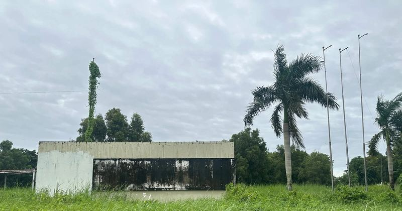
⚡
⚡
🔥
🔥
Chuyển từ “hỗ trợ” sang kiến tạo điều kiện để doanh nghiệp nhỏ và vừa phát triển
Chiều ngày 6/10, Bộ Tài chính tổ chức họp báo quý III/2026 dưới sự chủ trì của Thứ trưởng Bộ Tài chính Nguyễn Đức Chi. Tại Họp báo, đại diện các đơn vị thuộc Bộ Tài chính đã cung cấp, trao đổi nhiều thông tin liên quan đ
🔥
🔥
🔥
🔥
Lý do Bầu Đoan mang 150.000 USD 'cảm ơn' cựu Bí thư Tỉnh ủy Thanh Hóa Đỗ Trọng Hưng
Lý do Bầu Đoan mang 150.000 USD 'cảm ơn' cựu Bí thư Tỉnh ủy Thanh Hóa Đỗ Trọng Hưng Theo Hoàng An | 06/10/2026 16:09 PM | Xã hội Theo dõi Cafebiz.vn trên Sau khi chỉ đạo cấp dưới tạo điều kiện cho doanh nghiệp trúng đấu
🔥
🔥
Quảng Trị: Khơi thông nguồn lực đất đai, tăng tốc các dự án nhà ở, khu đô thị
Facebook Twitter Lưu bài viết Bản in Copy link Quảng Trị đang quyết liệt tháo gỡ những “điểm nghẽn” về đất đai, giải phóng mặt bằng, định giá đất và hạ tầng để đẩy nhanh tiến độ các dự án nhà ở, khu đô thị, khu dân cư. V
🔥
Rà soát các cầu yếu, có nguy cơ bị sạt lở, hư hỏng do ngập lụt và lũ quét
Facebook Twitter Lưu bài viết Bản in Copy link Cục Đường bộ Việt Nam vừa có văn bản gửi các Khu Quản lý đường bộ: I, II, III, IV; sở xây dựng các tỉnh, thành phố; nhà đầu tư, doanh nghiệp dự án chủ động phòng ngừa, ứng p
🔥
Bà Đặng Huỳnh Ức My lần thứ hai liên tiếp vào Top 100 phụ nữ quyền lực nhất châu Á
Bà Đặng Huỳnh Ức My , Chủ tịch HĐQT Công ty cổ phần Thành Thành Công – Biên Hòa ( AgiS, HoSE: SBT) tiếp tục có tên trong danh sách, sau lần đầu được Fortune ghi nhận vào năm 2025. Đây là năm thứ hai liên tiếp bà góp mặt
🔥
Nation Builders Awards 2026: Những doanh nghiệp đang góp phần kiến tạo nền tảng mới cho Việt Nam
Nation Builders Awards 2026: Những doanh nghiệp đang góp phần kiến tạo nền tảng mới cho Việt Nam Theo Nguyễn Hải | 06/10/2026 14:25 PM | Công nghệ Theo dõi Cafebiz.vn trên Từ làm chủ công nghệ, xây dựng hạ tầng số đến mở
🔥
🔥
Loạt bài Phim ngắn AI và hàng loạt hệ lụy: Sử dụng AI minh bạch, tích cực và sáng tạo
Trước đó, ngày 25-9, phóng sự truyền hình đa phương tiện “Ngáo" phim ngắn AI: Cơn sốt độc hại do Báo SGGP sản xuất cũng thu hút hơn 440.000 lượt xem, cảnh báo trực diện về những mặt trái của làn sóng công nghệ này. Dưới
🔥
Đề xuất cơ chế, chính sách đặc thù phát triển du lịch trở thành ngành kinh tế mũi nhọn
Phát triển du lịch Việt Nam trở thành ngành kinh tế mũi nhọn trong kỷ nguyên mới Theo Bộ Văn hóa, Thể thao và Du lịch, thực tiễn phát triển du lịch trong thời gian qua đã bộc lộ một số hạn chế, bất cập, chưa đáp ứng đầy
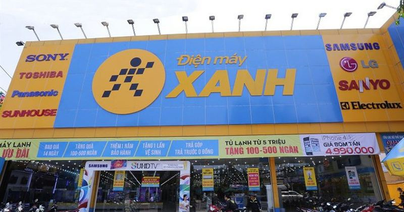
🔥12.410 tỷ đồng doanh thu chỉ trong 1 tháng: Điện Máy Xanh lập kỷ lục chưa từng có
TIN MỚI CTCP Đầu tư Điện Máy Xanh (DMX) vừa cập nhật kết quả kinh doanh 9 tháng năm 2026, trong đó điểm đáng chú ý nhất nằm ở tháng 9. Theo báo cáo, doanh thu riêng trong tháng 9 đạt 12.410 tỷ đồng, lập mức cao nhất kể t
🔥
Trạm sạc xe điện phải chuẩn hóa an toàn trong 24 tháng theo quy chuẩn mới
Làn sóng xe điện thúc đẩy hạ tầng trạm sạc phát triển mạnh mẽ hơn - Ảnh: QUANG ĐỊNH Yêu cầu cấp thiết trên vừa được quy định tại Quy chuẩn kỹ thuật quốc gia về trụ sạc, trạm sạc xe điện (QCVN 32:2026/BCT) do Bộ Công Thươ
🔥
🔥
🔥
Mỹ rút máy bay ném bom B-1 khỏi Anh: Mất "bàn đạp thuận lợi" đối phó Iran
(Dân trí) - Việc Mỹ rút các máy bay ném bom B-1 khỏi căn cứ không quân Fairford ở Anh đang làm dấy lên nhiều câu hỏi về khả năng tác chiến của Washington đối với Iran. Máy bay ném bom chiến lược B-1B Lancer của Mỹ (Ảnh:
🔥
MB khơi thông nguồn vốn chuỗi cung ứng, mở rộng tiếp cận tài chính cho doanh nghiệp
Trước sự chuyển dịch mạnh mẽ của chuỗi cung ứng Việt Nam và nhu cầu ngày càng cao về năng lực tài chính của các doanh nghiệp trong hệ sinh thái, Ngân hàng TMCP Quân đội (MB) tiên phong triển khai Nền tảng Tài trợ chuỗi c
🔥
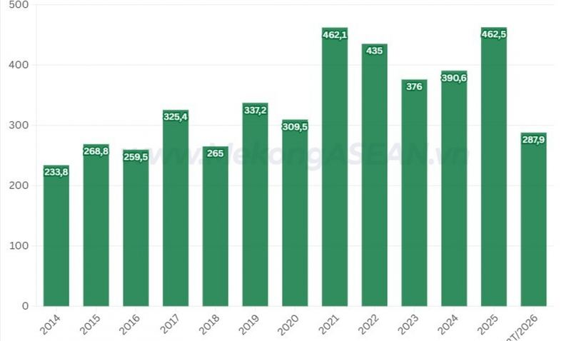
🔥
🔥
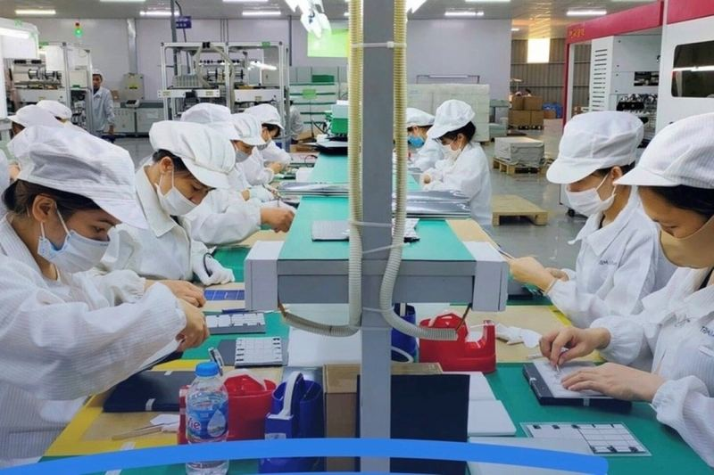
🔥
🔥
🔥
🔥
Xe tăng robot Shturm pháo 125 mm nòng ngắn của Nga: Công nghệ đột phá trong tác chiến đô thị
Xe tăng không người lái Shturm tại diễn tập Trung tâm 2026 - Tsentr-2026. Ảnh: Bộ Quốc phòng Nga Trong khuôn khổ diễn tập chiến lược Tsentr-2026 diễn ra đầu tháng 10/2026 tại thao trường Chebarkul thuộc vùng Chelyabinsk,
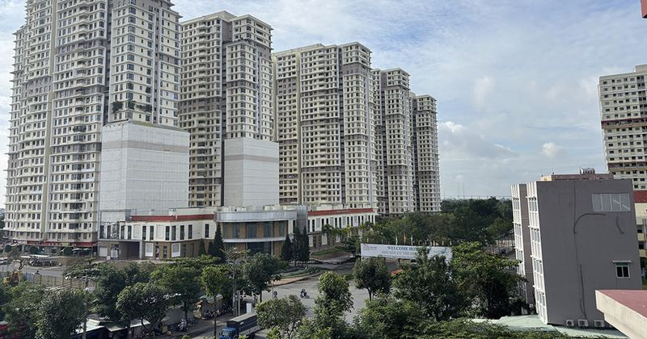
🔥
🔥
🔥
🔥
Luật Chứng khoán sắp sửa đổi: Hàng loạt vấn đề nóng được đưa ra thảo luận
TIN MỚI Chiều ngày 05/10/2026, tại Thành phố Hồ Chí Minh, Ủy ban Kinh tế và Tài chính của Quốc hội phối hợp với Bộ Tài chính tổ chức Hội thảo lấy ý kiến về dự án Luật sửa đổi, bổ sung một số điều của Luật Chứng khoán. Th
🔥
Con trai tỷ phú Trần Đình Long “phát tín hiệu”, nhóm cổ phiếu thép đồng loạt nổi sóng, có mã tăng kịch trần
TIN MỚI Nhóm cổ phiếu thép trở thành một trong những điểm sáng đáng chú ý trên thị trường chứng khoán trong phiên đầu tuần 5/10. Nổi bật nhất là TLH của Thép Tiến Lên khi tăng kịch trần 7% lên 3.060 đồng/cp. VCA tăng 5,9
⚡
⚡
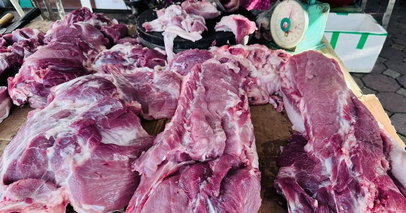
⚡
⚡
1 tuần sau khi ông Trần Lệ Nguyên công bố thành lập tập đoàn truyền thông, 'vũ trụ giải trí' mới của KIDO và YeaH1 có sự tham gia của Trấn Thành
TIN MỚI AIRO vừa chính thức hiện thực hóa bước đi chiến lược tiếp theo trong mảng Truyền thông - Giải trí & Thương mại thông qua việc thành lập Công ty CP Thương mại và giải trí A&M, thông tin từ doanh nghiệp vào chiều 6
⚡
Novaland phát hành hơn 1,7 triệu cổ phiếu để chuyển đổi trái phiếu quốc tế
Dự án của Novaland. Ảnh: Novaland Theo thông báo trên HoSE, ngày 6/10, HĐQT CTCP Tập đoàn Đầu tư Địa ốc No Va (Novaland, mã NVL) thông qua phương án phát hành cổ phiếu để chuyển đổi một phần trái phiếu và tăng vốn điều l
⚡
TP.HCM dự kiến phát hành trái phiếu đô thị để hút vốn làm cầu đường, metro
TP.HCM dự kiến phát hành trái phiếu đô thị để hút vốn làm cầu đường, metro Theo Hà Linh/VTC | 06/10/2026 19:11 PM | Kinh doanh Theo dõi Cafebiz.vn trên Trái phiếu đô thị, trái phiếu công trình phát hành qua Trung tâm tài
⚡
⚡
Cầu thủ vô địch ASIAD 'vạ miệng', Hàn Quốc xem xét hủy miễn nghĩa vụ quân sự
Cầu thủ vô địch ASIAD 'vạ miệng', Hàn Quốc xem xét hủy miễn nghĩa vụ quân sự Theo Khánh Ly | 06/10/2026 19:00 PM | Xã hội Theo dõi Cafebiz.vn trên Bộ Quốc phòng Hàn Quốc lên kế hoạch xóa bỏ chế độ nghĩa vụ đặc biệt cho v
⚡
⚡
1 tuần sau khi ông Trần Lệ Nguyên công bố thành lập tập đoàn truyền thông, 'vũ trụ giải trí' mới của KIDO và YeaH1 có sự tham gia của Trấn Thành
1 tuần sau khi ông Trần Lệ Nguyên công bố thành lập tập đoàn truyền thông, 'vũ trụ giải trí' mới của KIDO và YeaH1 có sự tham gia của Trấn Thành Trần Chung | 06/10/2026 18:40 PM | Kinh doanh Theo dõi Cafebiz.vn trên 'Vũ
⚡
Chủ tịch VNG Lê Hồng Minh cảnh báo: 3 năm tới, một lĩnh vực sẽ trở nên đặc biệt “nóng”
Chủ tịch VNG Lê Hồng Minh cảnh báo: 3 năm tới, một lĩnh vực sẽ trở nên đặc biệt “nóng” Theo Anh Khôi | 06/10/2026 18:30 PM | Kinh doanh Theo dõi Cafebiz.vn trên Trong bối cảnh AI ngày càng được ứng dụng sâu vào hoạt động
🔥
🔥
🔥
🔥
🔥
🔥
🔥
Thu ngân sách 9 tháng đạt gần 1,94 triệu tỷ đồng, ngành thuế tăng tốc số hóa
Ông Lê Long, Phó Cục trưởng Cục Thuế (Bộ Tài chính) - Ảnh: chinhphu.vn Hoàn thuế theo hướng dữ liệu và quản lý rủi ro Theo ông Lê Long, Phó Cục trưởng Cục Thuế (Bộ Tài chính), dự toán thu ngân sách nhà nước năm 2026 được
🔥
🔥
🔥
Tôn vinh 60 “Doanh nghiệp vì người lao động”, “Công nhân lao động Thủ đô tiêu biểu” năm 2026
Trong không khí phấn khởi, tự hào của những ngày tháng 10 lịch sử, hướng tới kỷ niệm 72 năm Ngày Giải phóng Thủ đô (10/10) và 22 năm Ngày Doanh nhân Việt Nam, Liên đoàn Lao động thành phố Hà Nội tổ chức Hội nghị tôn vinh
🔥
🔥
Bà Đặng Huỳnh Ức My lần thứ hai liên tiếp vào Top 100 Phụ nữ có tầm ảnh hưởng nhất châu Á
Bà Đặng Huỳnh Ức My - Chủ tịch Hội đồng Quản trị AgriS lần thứ hai liên tiếp vào Top 100 Phụ nữ có tầm ảnh hưởng nhất châu Á của Fortune - Ảnh: chinhphu.vn/LT Bà Đặng Huỳnh Ức My nhận vinh danh Most Powerful Women Asia 2
🔥
🔥
🔥
🔥
🔥
🔥
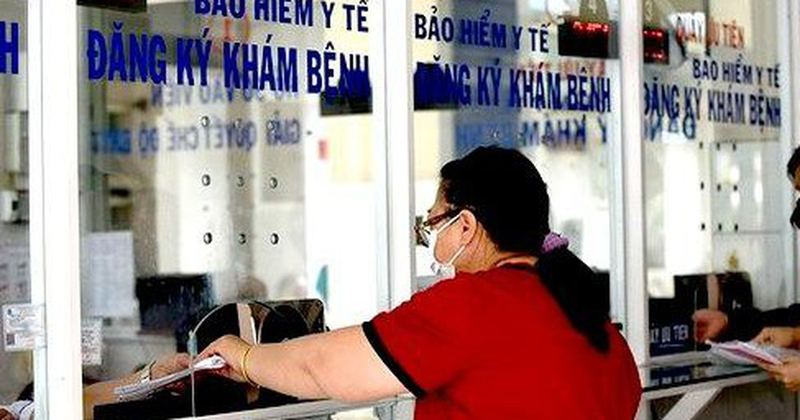
🔥
🔥
🔥
🔥
🔥
🔥
🔥
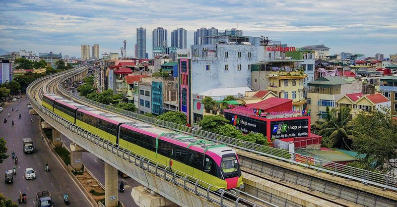
🔥
🔥
🔥
🔥
🔥
🔥
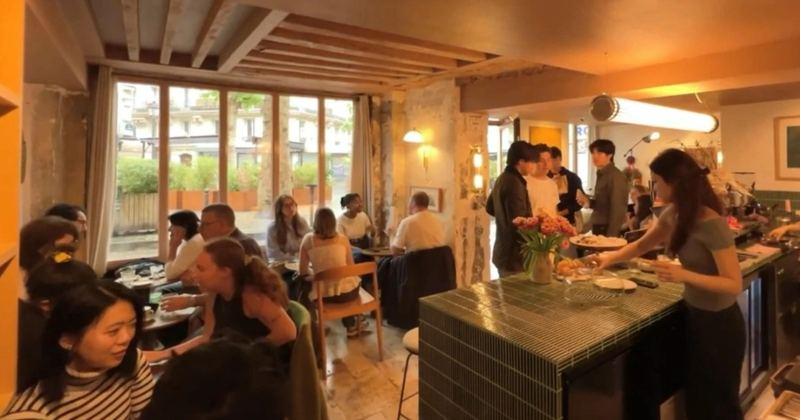
🔥Quán cà phê của 2 người Việt tại Pháp đông nghịt khách sau một lần mất điện
Sở dĩ hai người phải vội vã giữa đêm khuya là bởi quán cà phê do họ làm chủ tại Paris bất ngờ mất điện. Máy pha cà phê không thể hoạt động, trong khi cuối tuần lại là lúc khách đến đông. Muốn tiếp tục phục vụ, hai người
🔥
Tin tức thế giới 6-10: Tổng thống Iran nói đàm phán với Mỹ 'vô nghĩa'; Houthi bị đẩy khỏi eo biển Bab el-Mandeb
Dân biểu Đảng Dân chủ Pramila Jayapal phát biểu cùng đoàn người biểu tình yêu cầu ngừng phong tỏa Cuba tại tòa nhà Quốc hội Mỹ hồi cuối tháng 6 - Ảnh: AFP Cuba cho biết vẫn duy trì kênh liên lạc với Mỹ Ngày 5-10 (giờ địa
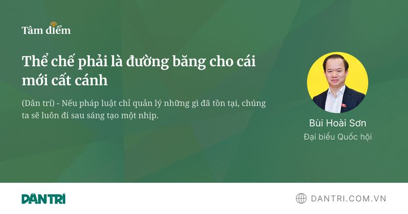
🔥
🔥
Có dấu hiệu này suốt nửa năm nhưng không đi khám, người phụ nữ 35 tuổi mắc ung thư giai đoạn cuối
TIN MỚI Trường hợp một phụ nữ 35 tuổi tại Đài Loan (Trung Quốc) được chẩn đoán ung thư dạ dày giai đoạn cuối sau nhiều tháng đầy hơi, ợ hơi là lời nhắc nhở về việc không nên chủ quan với những bất thường kéo dài ở đường
🔥
Tạo đường băng cho doanh nghiệp nhỏ và vừa "cất cánh": Tăng lượng phải tăng chất
DNNVV chiếm trên 98% số doanh nghiệp cả nước. Nếu lực lượng đông đảo này nâng được năng suất, mở rộng thị trường và tiến lên những nấc cao hơn trong chuỗi giá trị, phần giá trị tăng thêm cho nền kinh tế sẽ rất lớn. Bắt n
 🔥
🔥
🔥
🔥
Phản ứng của người tinh tế khi người khác đang kể chuyện nhưng điện thoại liên tục rung
TIN MỚI Điện thoại rung đúng lúc người đối diện đang kể chuyện là tình huống rất quen thuộc. Có người lập tức cầm máy lên xem, có người vừa nghe vừa liếc màn hình, cũng có người cố gắng mặc kệ nhưng trong lòng vẫn tò mò
🔥
Lại Lý Huynh chịu thiệt thòi khó tin trước kỳ vương Trung Quốc ở giải châu Á
Lại Lý Huynh trong cuộc đấu với Vương Vũ Bác ở Giải cờ tướng châu Á - Ảnh: LĐCTVN Lại Lý Huynh là kỳ thủ nam duy nhất đại diện cho Việt Nam tham dự Giải vô địch cờ tướng cá nhân châu Á diễn ra tại Philippines từ ngày 3-1
🔥
Việt Nam có dòng nước tự nhiên ấm nóng ~70 độ C quanh năm, được phát hiện cách đây 1 thế kỷ: Mạch ngầm ở độ sâu 150 m, nay liên quan đến khu nghỉ của tỷ phú Phạm Nhật Vượng
TIN MỚI Ở Tuyên Quang có một nguồn nước mà ngay khi được khai thác từ lòng đất, nhiệt độ đã ở mức gần 70°C. Đó là suối khoáng Mỹ Lâm , nằm cách khu vực trung tâm hành chính tỉnh khoảng 10 km. Theo Cổng Thông tin điện tử
🔥
Khối ngoại bán ròng tháng thứ 9 liên tiếp, tiền vào chứng khoán xuống thấp nhất hơn một năm rưỡi
TIN MỚI VN-Index khép lại tháng 9/2026 tại 1.768,6 điểm, giảm 3,5% so với cuối tháng trước. Diễn biến này xảy ra dù nền tảng vĩ mô trong nước vẫn tích cực và Việt Nam đã chính thức được FTSE Russell nâng hạng lên thị trư
🔥
Thông báo mới từ cơ quan Thuế: Toàn bộ người dân cả nước cần thực hiện việc này ngay lập tức trên eTax Mobile
TIN MỚI Theo thông tin từ Bộ Công an, thời gian qua, cơ quan chức năng ghi nhận tình trạng các đối tượng xấu thu thập, sử dụng trái phép thông tin cá nhân để đăng ký doanh nghiệp, hộ kinh doanh nhằm trốn thuế, buôn lậu,
⚡
⚡
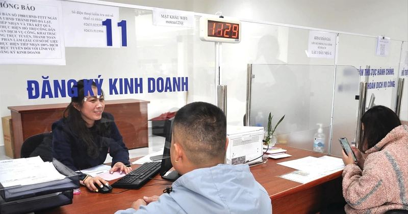
⚡
⚡
Nghiên cứu loạt cơ chế mới để thị trường chứng khoán phát triển bền vững
Ông Hoàng Văn Thu, Phó Chủ tịch Ủy ban Chứng khoán Nhà nước (UBCKNN) - Ảnh: chinhphu.vn Chuyển cổ phiếu về HOSE, nghiên cứu loạt cơ chế giao dịch mới Tại họp báo Bộ Tài chính ngày 6/10, ông Hoàng Văn Thu, Phó Chủ tịch Ủy
⚡
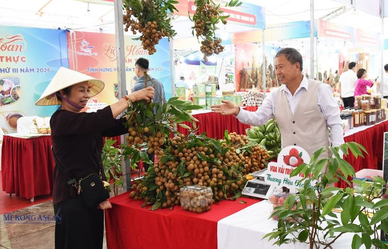
⚡
⚡
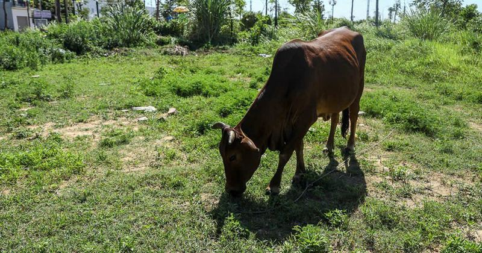
⚡Đề xuất đánh thuế đất bỏ hoang gấp 7 lần đất trong hạn mức : Tiêu chí nào xác định là đất bỏ hoang ?
Ông Trương Bá Tuấn - Phó vụ trưởng Vụ Chính sách thuế, phí và lệ phí - trả lời báo chí về đánh thuế đối với đất bỏ hoang - Ảnh: LÊ THANH Thuế suất 0,2% đối với đất bỏ hoang bằng với đất lấn chiếm Chiều 6-10, trao đổi với
⚡
⚡
🔥
🔥
🔥
Thông cáo báo chí về ngày làm việc thứ hai Hội nghị lần thứ tư Ban Chấp hành Trung ương Đảng khoá XIV
Hội nghị lần thứ tư Ban Chấp hành Trung ương Đảng khoá XIV tiếp tục ngày làm việc thứ hai 1. Buổi sáng, đồng chí Tổng Bí thư, Chủ tịch nước Tô Lâm điều hành Hội nghị. Trung ương và các đại biểu làm việc tại Hội trường, t
🔥
🔥
Fortune tiếp tục vinh danh bà Mai Kiều Liên trong danh sách 100 Phụ nữ quyền lực nhất châu Á
Trong danh sách Most Powerful Women Asia 2026, Fortune xếp bà Mai Kiều Liên ở vị trí 71, tăng 2 bậc so với năm 2025 và 4 bậc so với lần đầu được vinh danh năm 2024. Trong ba năm liên tiếp góp mặt, thứ hạng của bà lần lượ
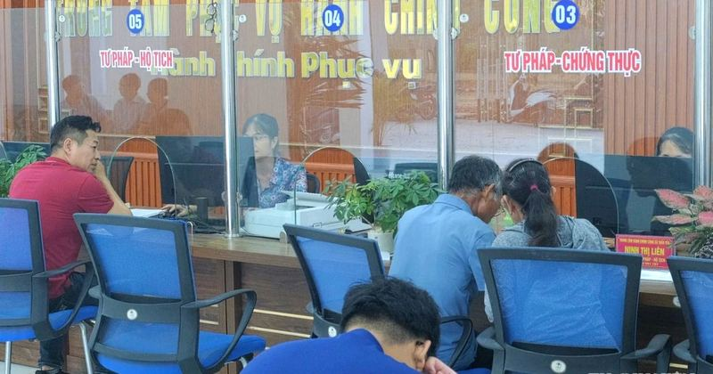
🔥
🔥
🔥
Khởi tố bị can sản xuất, buôn bán hàng giả là thực phẩm, giả mạo nguồn gốc xuất xứ
Phòng Cảnh sát kinh tế- Công an thành phố Hà Nội vừa kiểm tra, phát hiện nhiều địa điểm sản xuất, kinh doanh bánh, kẹo với số lượng lớn, có dấu hiệu vi phạm pháp luật về nguồn gốc, xuất xứ hàng hóa. Trước đó, ngày 18/9,
🔥
Hải Phòng giải bài toán tăng trưởng hai con số: Từ quyết tâm chính trị đến hiệu quả thực thi
Nghị quyết Đại hội Đảng bộ thành phố Hải Phòng cũng xác định mục tiêu tăng trưởng GRDP bình quân từ 13%/năm trở lên, phấn đấu đạt 14%/năm. Đây vừa là sự tin tưởng, kỳ vọng của Trung ương, vừa là “áp lực” rất lớn đối với
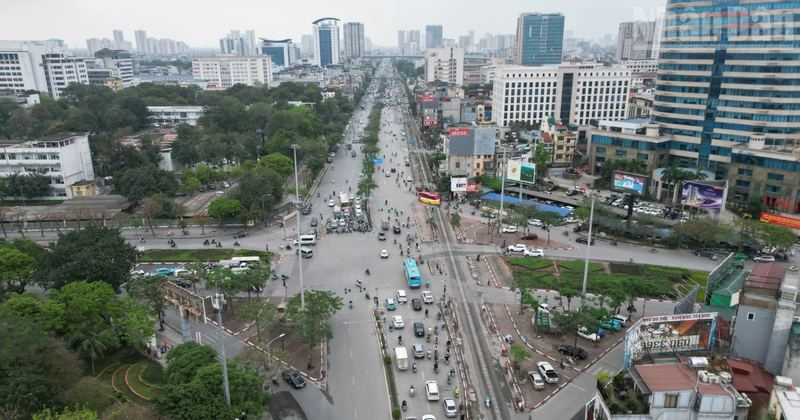
🔥
🔥
🔥
🔥
🔥
🔥
Bà Mai Kiều Liên: Từ kỹ sư ngành sữa đến Top 100 phụ nữ quyền lực nhất châu Á
Trong danh sách Most Powerful Women Asia 2026, Fortune xếp bà Mai Kiều Liên ở vị trí 71, tăng 2 bậc so với năm 2025 và 4 bậc so với lần đầu được vinh danh năm 2024. Trong ba năm liên tiếp góp mặt, thứ hạng của bà lần lượ
🔥
S&P Global Market Intelligence: HDBank đứng thứ 2 về hiệu quả hoạt động trong Top 50 ngân hàng niêm yết lớn nhất Đông Nam Á
TIN MỚI Theo bảng xếp hạng hiệu quả hoạt động năm 2025 của S&P Global Market Intelligence đối với 50 ngân hàng niêm yết lớn nhất khu vực Đông Nam Á, các ngân hàng được đánh giá trên nhiều khía cạnh về khả năng sinh lời,
🔥
NHCSXH quyết tâm cao, tăng tốc, phấn đấu hoàn thành toàn diện nhiệm vụ năm 2026
Bà Nguyễn Thị Hằng - Bí thư Đảng ủy NHCSXHTW, Ủy viên HĐQT, Tổng giám đốc NHCSXH phát biểu chỉ đạo hội nghị Hơn 1,5 triệu lượt khách hàng được vay vốn chính sách trong 9 tháng Trong 9 tháng đầu năm 2026, bám sát chỉ đạo
🔥
🔥
🔥
Điện Biên: Chú trọng tuyên truyền, nâng cao ý thức phòng, tránh tội phạm mua bán người
Nhắc lại vụ án mua bán người do Công an Điện Biên triệt phá thành công vào tháng 8/2025, Đại tá Nguyễn Tuấn Bắc, Trưởng phòng Cảnh sát Hình sự (Công an tỉnh Điện Biên), cho biết: Trong số 5 bị can bị khởi tố về hành vi m
🔥
🔥
🔥
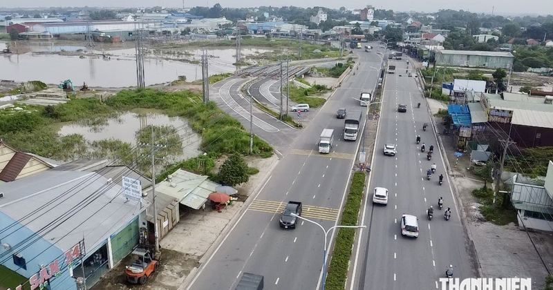
🔥
🔥
🔥
🔥
🔥
Bà Mai Kiều Liên: Từ kỹ sư ngành sữa đến Top 100 Phụ nữ quyền lực nhất châu Á lần thứ ba liên tiếp
Bà Mai Kiều Liên lần thứ ba liên tiếp được Fortune vinh danh trong Top 100 Phụ nữ quyền lực nhất châu Á - Ảnh: Vi Nam Trong danh sách Most Powerful Women Asia 2026, Fortune xếp bà Mai Kiều Liên ở vị trí 71, tăng 2 bậc so
🔥
Chứng khoán ngày 6/10: VN-Index tăng điểm, khối ngoại tiếp tục bán ròng hơn 2.500 tỷ đồng
Thanh khoản toàn thị trường tăng so với phiên trước đó, tổng khối lượng giao dịch 3 sàn đạt hơn 935 triệu cổ phiếu, tương ứng tổng giá trị giao dịch đạt hơn 21.289 tỷ đồng. Nhà đầu tư nước ngoài tiếp tục bán ròng trên cả
🔥
 🔥
🔥
Một cổ phiếu ngân hàng bất ngờ bị khối ngoại "xả" hơn 2.000 tỷ phiên 6/10
TIN MỚI Tâm lý thận trọng tiếp tục chi phối thị trường, khiến VN-Index giằng co trong phần lớn thời gian giao dịch trước khi đảo chiều tăng điểm về cuối phiên. Khép lại phiên 6/10, chỉ số tăng gần 6 điểm, lên 1.759 điểm.
🔥
[Video] Hà Nội trình diễn pháo hoa mừng 72 năm Ngày Giải phóng Thủ đô 10/10
Điểm nhấn đặc biệt của dịp lễ là màn trình diễn pháo hoa kéo dài 15 phút, bắt đầu từ 21 giờ ngày 10/10 tại hai địa điểm quen thuộc. Trận địa thứ nhất đặt trước khu vực Bưu điện Hà Nội, sử dụng 350 giàn pháo kết hợp tầm c
🔥
Vingroup hợp tác Alstom cung cấp 200 đoàn tàu metro Hà Nội, sẽ chuyển giao công nghệ để sản xuất tại Việt Nam
Tàu metro thế hệ mới được v ận hành tự động GoA4, tối ưu năng lượng Theo nội dung hợp tác giữa Vingroup và Alstom được công bố ngày 6-10, Alstom sẽ cung cấp tổng cộng 200 đoàn tàu Metropolis thế hệ mới cho mạng lưới đườn
🔥
🔥
SHS năm thứ hai liên tiếp được VIS Rating xếp hạng A, củng cố nền tảng tăng trưởng
TIN MỚI Đây là năm thứ hai liên tiếp SHS giữ mức đánh giá này, phản ánh hồ sơ tín nhiệm của Công ty trong giai đoạn đẩy mạnh chuyển đổi mô hình kinh doanh và chuẩn bị nguồn lực cho một chu kỳ phát triển mới. VIS Rating l
🔥
🔥
🔥
🔥
🔥
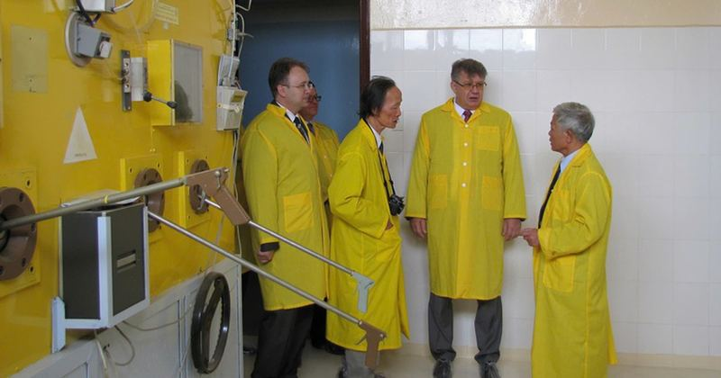
🔥
🔥
🔥
🔥
Nobel 2026 mở màn với công nghệ dùng ánh sáng điều khiển tế bào thần kinh
Giải Nobel Y Sinh 2026 vinh danh ba nhà khoa học Karl Deisseroth, Peter Hegemann và Georg Nagel Mùa Nobel 2026 khởi động với giải Y Sinh được trao cho nhà khoa học Mỹ Karl Deisseroth và hai nhà khoa học Đức Peter Hegeman
🔥
🔥
🔥
Tài chính doanh nghiệp 24/7: Digiworld ước đạt doanh thu 26.500 tỷ đồng, Gemadept thành lập công ty con vốn 498 tỷ đồng
Bản tin Tài chính doanh nghiệp 24/7 ngày 6/10 ghi nhận kết quả kinh doanh của TKV, Nam A Bank, Digiworld và AgriS; hoạt động huy động vốn, tăng vốn tại các doanh nghiệp; kế hoạch vận hành thử sân bay Long Thành cùng các
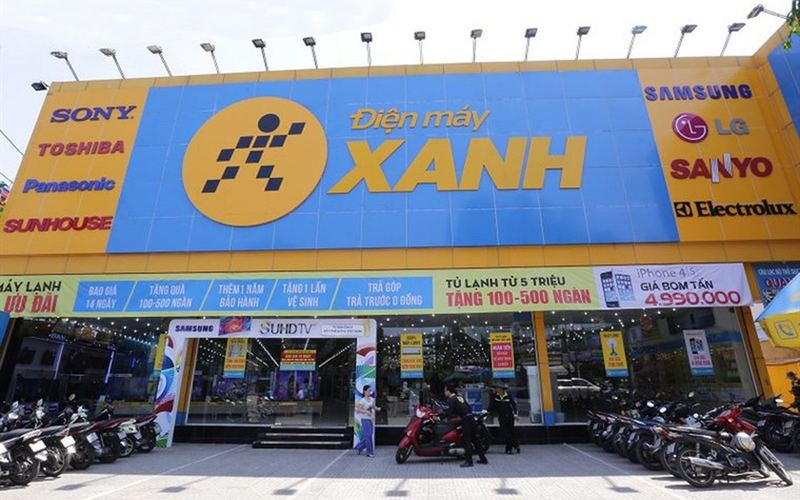
🔥12.410 tỷ đồng doanh thu chỉ trong 1 tháng: Điện Máy Xanh lập kỷ lục chưa từng có
12.410 tỷ đồng doanh thu chỉ trong 1 tháng: Điện Máy Xanh lập kỷ lục chưa từng có Phương Vy | 06/10/2026 10:18 AM | Kinh doanh Theo dõi Cafebiz.vn trên Tháng 9/2026, Điện Máy Xanh ghi nhận doanh thu 12.410 tỷ đồng, mức c
🔥
🔥
Tin tức giá xe: Lynk & Co 02 giảm 'phí nuôi xe', xe điện được chú ý từ Gen Z đến phái nữ
Lynk & Co 02 xuất hiện tại triển lãm Vietnam Innovative Mobility Show - Ảnh: HOÀNG DŨNG Lynk & Co 02 nhận nhiều ưu đãi Lynk & Co 02 là mẫu xe thuần điện mới được thương hiệu Lynk & Co chính thức giới thiệu ở Việt Nam vào
🔥
MB được vinh danh là thành viên giao dịch tiêu biểu trên thị trường trái phiếu
Đại diện MB nhận cúp vinh danh tại sự kiện Chiều 2.10.2016, Sở Giao dịch chứng khoán Việt Nam (VNX) đã tổ chức Hội nghị Thành viên năm 2026. Hội nghị có sự tham dự của đại diện các cơ quan quản lý nhà nước gồm Ủy ban Kin
🔥
Gần 3.000 người dồn sức thi công trên đại công trường cao tốc Nội Bài - Lào Cai
Dự án mở rộng đoạn Yên Bái - Lào Cai thuộc tuyến cao tốc Nội Bài - Lào Cai có tổng mức đầu tư gần 7.700 tỷ đồng, do Tổng công ty Đầu tư phát triển đường cao tốc Việt Nam (VEC) làm chủ đầu tư. Dự án sẽ mở rộng mặt đường t
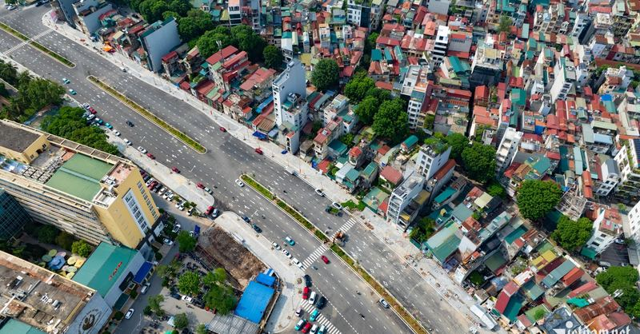
🔥Danh sách 15 công trình giao thông Hà Nội đưa vào sử dụng từ nay tới cuối năm
Tại họp báo thông tin về tình hình kinh tế - xã hội quý 3/2026 của UBND TP Hà Nội, trả lời câu hỏi của VietNamNet về những công trình tác động trực tiếp đến đời sống người dân và mốc hoàn thành, Phó giám đốc Sở Xây dựng
 🔥
🔥
Làn sóng đầu tư chưa từng có đổ về thành phố trẻ nhất Việt Nam: Quy hoạch hơn 1.100 ha đất cho 1 mục tiêu quan trọng, hút loạt dự án nghìn tỷ của các “ông lớn” danh tiếng từ Hà Nội
TIN MỚI Điểm hẹn mới đầy tiềm năng của các trường đại học danh tiếng Mới đây, ông Mai Sơn, Ủy viên Ban Thường vụ Thành ủy, Phó Chủ tịch Thường trực UBND thành phố Bắc Ninh, chủ trì buổi làm việc với Đại học Bách khoa Hà
🔥
🔥
Ông Đặng Lê Nguyên Vũ đã âm thầm làm một việc tại Mỹ gần 1 năm trước khi bán xe cà phê - bánh mì vỉa hè ở Việt Nam
TIN MỚI Đầu tháng 10, một thông tin tuyển dụng của Trung Nguyên Franchising gây chú ý khi doanh nghiệp thuộc hệ sinh thái của ông Đặng Lê Nguyên Vũ tìm nhân viên bán hàng cho dự án xe cà phê lưu động tại Hà Nội. Người đư
🔥
Ông Phạm Nhật Vượng thuê “bộ não" tư vấn đường sắt cao tốc Hà Nội – Quảng Ninh: 185 năm kinh nghiệm, từng tham gia tuyến 450 km xuyên sa mạc, tàu chạy 320 km/h nối hai thánh địa
TIN MỚI DB Engineering & Consulting (DB E&C) là công ty kỹ thuật và tư vấn đường sắt thuộc tập đoàn Deutsche Bahn của Đức. Tại Việt Nam, doanh nghiệp đã giành hợp đồng làm tư vấn kỹ thuật tổng thể cho tuyến đường sắt tốc
🔥
⚡
 ⚡
⚡
Toàn cảnh vụ việc tại Viện Pháp y tâm thần Trung ương trước ngày tuyên án
65 bị cáo bị xét xử về 9 tội danh: “Tàng trữ trái phép chất ma túy”; “Tổ chức sử dụng trái phép chất ma túy”; “Môi giới hối lộ”; “Đưa hối lộ”; “Nhận hối lộ”; “Lợi dụng chức vụ, quyền hạn trong khi thi hành công vụ”; “Làm
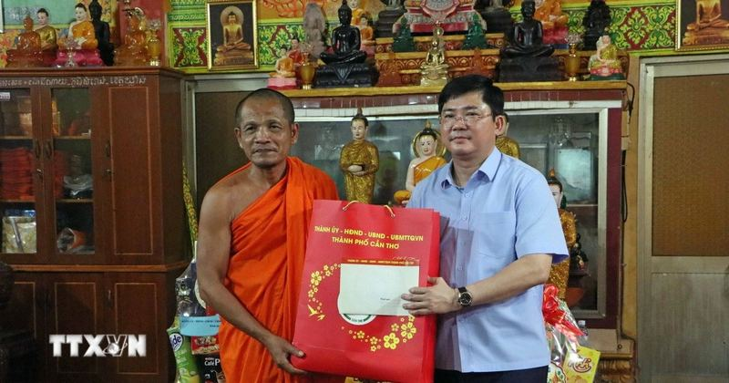
⚡Cần Thơ quan tâm chăm lo đời sống văn hóa, tín ngưỡng của đồng bào Khmer
Facebook Twitter Lưu bài viết Bản in Copy link Chiều 6/10, nhân dịp Lễ Sene Dolta của đồng bào Khmer năm 2026, đại diện lãnh đạo Thành ủy, Ủy ban Trung ương Mặt trận Tổ quốc Việt Nam thành phố Cần Thơ đã tổ chức các đoàn
⚡
Chuyến thăm chính thức của Thủ tướng Lê Minh Hưng tới Lào có ý nghĩa đặc biệt quan trọng
Facebook Twitter Lưu bài viết Bản in Copy link Nhận lời mời của Thủ tướng Chính phủ nước Cộng hòa dân chủ nhân dân Lào Saleumxay Kommasith, Thủ tướng Chính phủ nước Cộng hòa xã hội chủ nghĩa Việt Nam Lê Minh Hưng sẽ dẫn
⚡
⚡
⚡
⚡
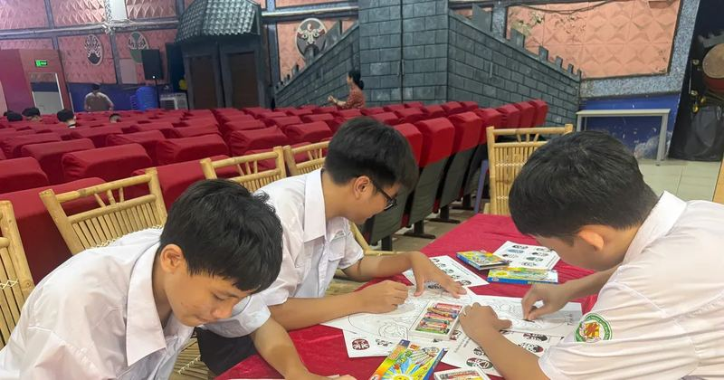
⚡
⚡
[Video] Thời sự 24h ngày 6/10/2026: Trung ương thảo luận, xây dựng Nghị quyết tăng cường xây dựng, chỉnh đốn Đảng và hệ thống chính trị trong sạch, vững mạnh, toàn diện
Ngày 6/10/2026, Hội nghị lần thứ tư Ban Chấp hành Trung ương Đảng khóa XIV bước vào ngày làm việc thứ hai. Buổi sáng, đồng chí Tổng Bí thư, Chủ tịch nước Tô Lâm điều hành Hội nghị, Trung ương và các đại biểu làm việc tại
⚡
Tổng Bí thư, Chủ tịch nước Tô Lâm và Tổng thống Panama gặp gỡ báo chí sau hội đàm
Tổng Bí thư, Chủ tịch nước Tô Lâm và Tổng thống Panama gặp gỡ báo chí sau hội đàm - Ảnh: chinhphu.vn/Nhật Bắc Phát biểu tại gặp gỡ báo chí, Tổng Bí thư, Chủ tịch nước Tô Lâm bày tỏ vui mừng đón ngài Tổng thống José Raúl
⚡
⚡
⚡
⚡
Tổng Bí thư, Chủ tịch nước Tô Lâm và Tổng thống Cộng hòa Panama gặp gỡ báo chí
Facebook Twitter Lưu bài viết Bản in Copy link Trong khuôn khổ chuyến thăm chính thức Việt Nam, chiều 6/10, tại Nhà Quốc hội, ngay sau hội đàm, Tổng Bí thư, Chủ tịch nước Tô Lâm và Tổng thống nước Cộng hòa Panama José Ra
⚡
⚡
⚡
⚡
⚡
⚡
⚡
Phá đường dây mại dâm cao cấp hàng nghìn thành viên hoạt động trên Telegram
Ngày 6/10, Phòng Cảnh sát hình sự Công an tỉnh Tây Ninh cho biết: Cơ quan Cảnh sát điều tra vừa khởi tố, bắt tạm giam 7 đối tượng để điều tra về các hành vi môi giới mại dâm, chứa mại dâm, mua dâm người dưới 18 tuổi và h
⚡
⚡
⚡
⚡
⚡
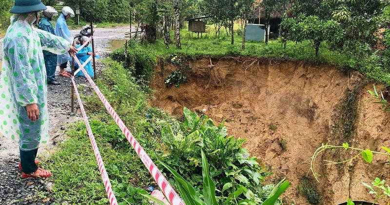
⚡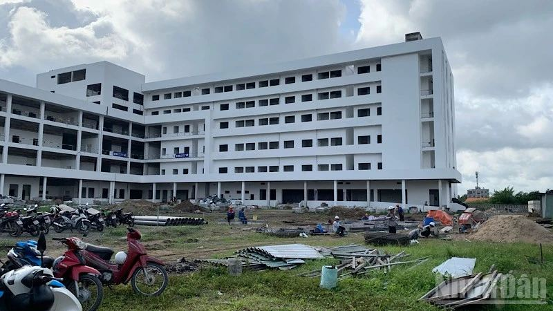
Nữ lãnh đạo duy nhất của Việt Nam 3 năm liên tiếp được Fortune vinh danh
Nguyên Ủy viên Trung ương Đảng, Anh hùng Lao động, Tổng Giám đốc Vinamilk Mai Kiều Liên tiếp tục được Fortune vinh danh trong danh sách 100 Phụ nữ quyền lực nhất châu Á năm 2026. Đây là lần thứ ba liên tiếp bà có mặt tro
Nghiên cứu khoa học không tách rời giảng dạy, góp phần giải quyết những vấn đề thực tiễn
Các đại biểu dự hội thảo. Ảnh: THANH HOA Hội thảo được tổ chức trong bối cảnh Quốc hội đang họp bàn về dự án Luật Đất đai (sửa đổi) và tháo gỡ những điểm nghẽn vướng mắc. Hội thảo do Tạp chí Pháp luật và Phát triển phối
Prudential Việt Nam hợp tác cùng BUV trang bị kiến thức tài chính và kỹ năng nghề nghiệp cho sinh viên
Prudential Việt Nam (Prudential) và Trường Đại học Anh Quốc Việt Nam (BUV) chính thức ký kết Biên bản ghi nhớ, mở ra hợp tác trong các hoạt động giáo dục tài chính, định hướng nghề nghiệp và phát triển kỹ năng dành cho s
🔥
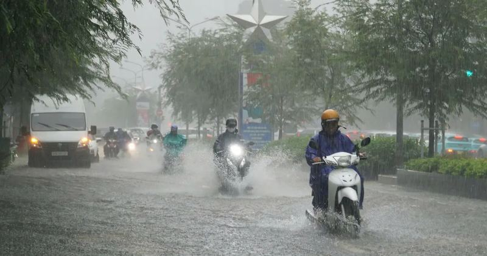
🔥
🔥
🔥
Giá vàng miếng, vàng nhẫn trơn chiều 6/10 đồng loạt giảm tại SJC, DOJI, Bảo Tín Mạnh Hải, PNJ,...
TIN MỚI Cập nhật đầu giờ chiều ngày 6/10, giá vàng trong nước giảm tại nhiều thương hiệu. Ở vàng miếng, SJC giảm 600.000 đồng/lượng ở cả hai chiều, xuống 139,9-142,9 triệu đồng/lượng. Bảo Tín Mạnh Hải giảm 600.000 đồng ở
🔥
🔥
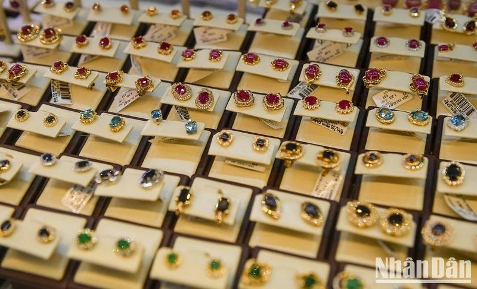
🔥Giá vàng ngày 6/10: Thế giới tiếp đà giảm, trong nước đi ngang phiên thứ 3 liên tiếp
Trong phiên giao dịch hôm nay (6/10), giá vàng miếng và vàng nhẫn các thương hiệu trong nước không biến động so với phiên hôm qua. Trong khi đó, trên thị trường quốc tế, giá vàng nối dài đà giảm, lùi về sát ngưỡng 4.100
🔥
🔥
🔥
🔥
🔥
Steven Nguyễn: Từ nhân viên soát vé đến diễn viên nghìn tỷ mới của màn ảnh Việt
Steven Nguyễn: Từ nhân viên soát vé đến diễn viên nghìn tỷ mới của màn ảnh Việt Theo Lê Chi | 06/10/2026 10:27 AM | Sống Theo dõi Cafebiz.vn trên Từng chật vật tìm chỗ đứng với những vai diễn nhỏ, làm thêm nghề soát vé,
 🔥
🔥
🔥
Thành phố trẻ nhất Việt Nam quy hoạch hơn 1.100 ha đất cho 1 mục tiêu quan trọng, hút loạt dự án nghìn tỷ của các “ông lớn” danh tiếng từ Hà Nội về đầu tư
Thành phố trẻ nhất Việt Nam quy hoạch hơn 1.100 ha đất cho 1 mục tiêu quan trọng, hút loạt dự án nghìn tỷ của các “ông lớn” danh tiếng từ Hà Nội về đầu tư Theo Kim Linh | 06/10/2026 07:48 AM | Kinh tế vĩ mô Theo dõi Cafe
🔥
🔥
🔥
Đại tá, tiến sĩ, NSND 'bắt bài' phim ngắn AI: Đừng mong cướp nghề của chúng tôi
LỜI TOÀ SOẠN Sự bùng nổ của công nghệ và trí tuệ nhân tạo (AI) kéo theo sự bùng nổ của phim ngắn AI trên mọi nền tảng. Các bộ phim có nội dung giật gân, tình tiết phi logic, diễn viên đẹp biểu cảm na ná nhau... có lượng
🔥
Chung cư Văn Phú tăng giá 5 lần sau hơn 10 năm, có dự án vẫn 'đắp chiếu'
Khu đô thị mới Văn Phú được khởi công vào năm 2007-2008, do CTCP Đầu tư Văn Phú - Invest làm chủ đầu tư chính. Dự án có quy mô khoảng 77ha, tổng mức đầu tư ban đầu hơn 2.100 tỷ đồng, hình thành trong giai đoạn thị trường
 🔥
🔥
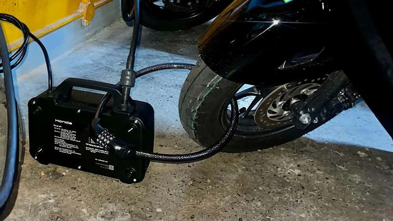
🔥
🔥
⚡
Vingroup thuê 'ông lớn' top đầu thế giới cho tuyến đường đặc biệt dài 23 phút từ Hà Nội đi vịnh Hạ Long
Vingroup thuê 'ông lớn' top đầu thế giới cho tuyến đường đặc biệt dài 23 phút từ Hà Nội đi vịnh Hạ Long Theo Thái Hà | 06/10/2026 20:41 PM | Kinh doanh Theo dõi Cafebiz.vn trên 'Ông lớn' có mặt ở hơn 100 quốc gia trên th
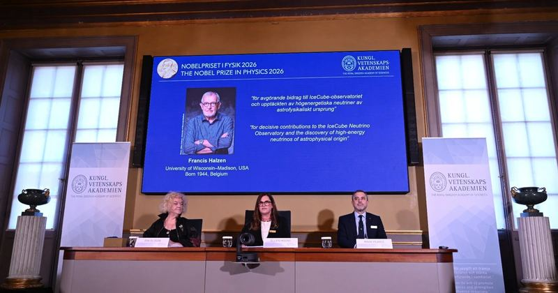
⚡Giải Nobel Vật lý 2026 vinh danh công trình nghiên cứu về hạt neutrino năng lượng cao có nguồn gốc từ vũ trụ
Nghiên cứu của nhà khoa học Francis Halzen tập trung ghi nhận các hạt neutrino -những hạt hạ nguyên tử siêu nhỏ được coi là "sứ giả vũ trụ" giúp giải mã sự tiến hóa của vũ trụ. Neutrino là các hạt hạ nguyên tử siêu nhỏ,
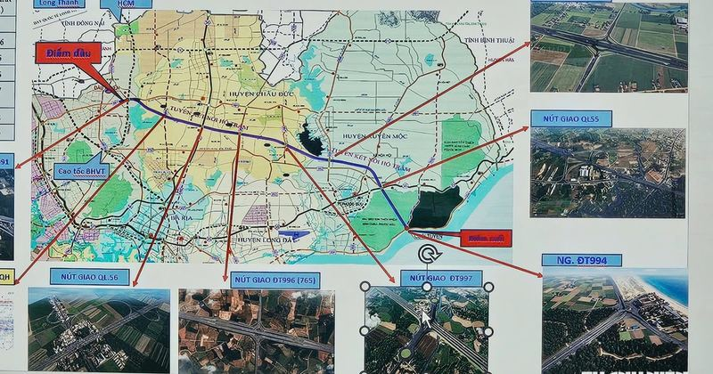
⚡
⚡
⚡
Ban Bí thư ban hành Khung Kiến trúc số của các cơ quan đảng, phiên bản 1.0
Đồng chí Trần Cẩm Tú, Ủy viên Bộ Chính trị, Thường trực Ban Bí thư Tăng cường kết nối, chia sẻ dữ liệu và sử dụng chung hạ tầng số Khung Kiến trúc số của các cơ quan đảng, phiên bản 1.0 là hợp phần của Khung kiến trúc tổ
⚡
Người đi đường hốt hoảng khi dàn máy thi công khổng lồ bất ngờ đổ sập trước mặt
Chiều tối 6/10, đại diện Ban Quản lý dự án hạ tầng đô thị TPHCM (chủ đầu tư) đã có báo cáo sơ bộ về sự cố máy thi công tại rạch Xuyên Tâm nặng chục tấn bất ngờ bị ngã xuống đường khiến tuyến đường Bùi Hữu Nghĩa tê liệt.
⚡
⚡
Thành phố Hồ Chí Minh: Thiết bị thi công rạch Xuyên Tâm ngã đổ ra đường Bùi Hữu Nghĩa
Facebook Twitter Lưu bài viết Bản in Copy link Chiều 6/10, một thiết bị tại công trường dự án nạo vét, cải tạo môi trường, xây dựng hạ tầng rạch Xuyên Tâm trong quá trình lắp dựng đã bị gãy trục mâm và ngã đổ ra đường Bù
⚡
BLV Quang Tùng: 'Cả giải FIFA ASEAN Cup, Việt Nam chỉ đá thực sự tốt 30 phút', vì sao?
Tuyển Việt Nam khép lại FIFA ASEAN Cup với vị trí thứ tư chung cuộc là thành tích không tốt so với kỳ vọng của người hâm mộ. Tuy nhiên, trong bối cảnh đội hình bị sứt mẻ nghiêm trọng vì chấn thương, phần lớn trụ cột còn
⚡
Thành phố Hồ Chí Minh: Cảnh báo 122 điểm ngập, tăng cường điều tiết giao thông mùa mưa
Facebook Twitter Lưu bài viết Bản in Copy link Chiều 6/10, Phòng Cảnh sát giao thông (PC08), Công an Thành phố Hồ Chí Minh thông tin cảnh báo 122 điểm có nguy cơ ngập nước trên địa bàn, gồm 83 điểm ngập do mưa lớn, nước
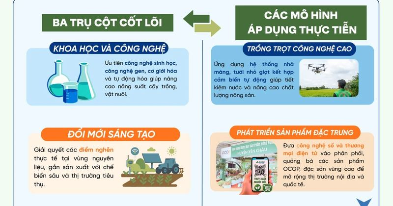
⚡Nghị quyết 57-NQ/TW đột phá chuyển đổi: Công nghệ tái cấu trúc nông nghiệp
Facebook Twitter Lưu bài viết Bản in Copy link Việc áp dụng Nghị quyết 57-NQ/TW (về đột phá phát triển khoa học, công nghệ, đổi mới sáng tạo và chuyển đổi số quốc gia) trong sản xuất nông nghiệp tạo đòn bẩy chuyển đổi từ
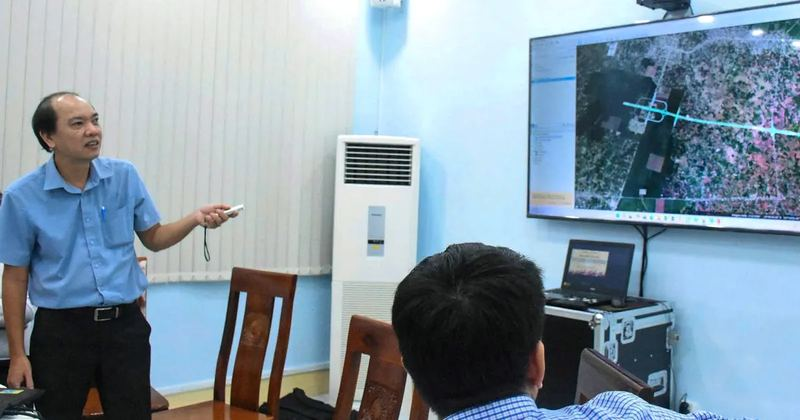
⚡Cục Hàng không: Sân bay Long Thành, Gia Bình mở thêm không gian phát triển
Facebook Twitter Lưu bài viết Bản in Copy link Trong 9 tháng vừa qua, thị trường hàng không Việt Nam vẫn duy trì đà tăng trưởng cả về hành khách và hàng hóa. Các hãng hàng không tiếp tục gia tăng đội bay và mở rộng điểm
Một doanh nghiệp sắp trả cổ tức 4.000 đồng/cp ngay trong tháng 10, đều đặn "chia tiền" suốt 16 năm liền
TIN MỚI CTCP Sách và Thiết bị trường học Đà Nẵng (HNX: BED) vừa thông qua phương án tạm ứng cổ tức năm 2026 bằng tiền mặt với tỷ lệ 40% trên vốn điều lệ, tương ứng mỗi cổ phiếu nhận 4.000 đồng. Ngày đăng ký cuối cùng để
Đà Nẵng đưa Robotics đến với thiếu nhi miền núi, khơi dậy tư duy công nghệ
Facebook Twitter Lưu bài viết Bản in Copy link Hưởng ứng Ngày Chuyển đổi số quốc gia 10/10, Ban Thường vụ Thành Đoàn Đà Nẵng phối hợp với Quỹ Nhi đồng Liên hợp quốc (UNICEF Việt Nam) tổ chức Chương trình “Robotics Day” v
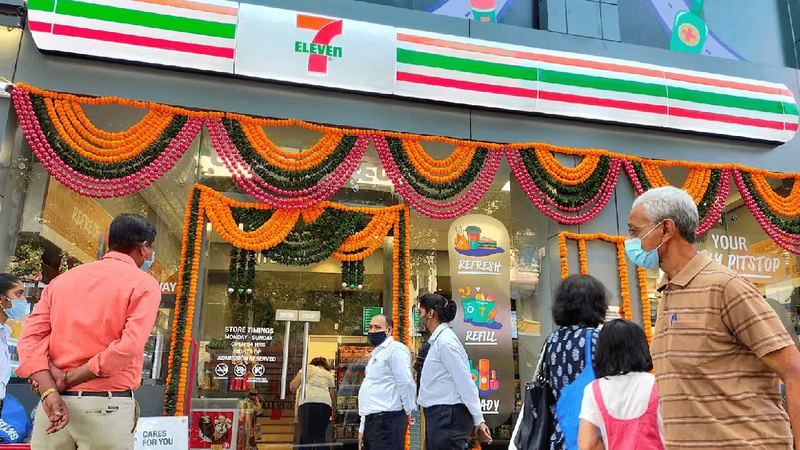
7 - Eleven Ấn Độ đóng cửa toàn bộ cửa hàng sau 5 năm cạnh tranh khốc liệt
7-Eleven đóng toàn bộ các cửa hàng ở một quốc gia châu Á Hà Thu | 06/10/2026 15:33 PM | Kinh doanh Theo dõi Cafebiz.vn trên Thỏa thuận nhượng quyền với Seven & i Holdings của Nhật Bản chấm dứt sau 5 năm khi chuỗi cửa hàn
🔥
🔥
🔥
Công an thông tin 50 số điện thoại, người dân tuyệt đối KHÔNG NGHE kẻo mất sạch tiền trong tài khoản
Công an thông tin 50 số điện thoại, người dân tuyệt đối KHÔNG NGHE kẻo mất sạch tiền trong tài khoản Hân Ly | 06/10/2026 15:01 PM | Xã hội Theo dõi Cafebiz.vn trên Một cuộc gọi từ số lạ tưởng chừng vô hại nhưng có thể là
🔥
🔥
🔥
Tội phạm săn dữ liệu cá nhân, mua ảnh căn cước chỉ 100.000 - 300.000 đồng
Thiếu tướng Nguyễn Minh Tuấn trực tiếp chỉ đạo lấy lời khai những người trong đường dây lừa đảo xuyên quốc gia - Ảnh: Công an tỉnh Phú Thọ Phát biểu tại tọa đàm "Thúc đẩy tài chính toàn diện - Động lực từ thanh toán khôn
🔥
🔥
🔥
🔥
🔥
🔥
🔥
🔥
🔥
🔥
Lực lượng Houthi tấn công nhiều cơ sở hạ tầng trọng yếu của Saudi Arabia
Chào mừng quý độc giả và thính giả đến với Bản tin Thế giới - chuyên mục podcast quốc tế hàng ngày trên Báo Điện tử VietnamPlus. Tại đây, chúng tôi cập nhật nhanh nhất những diễn biến nổi bật toàn cầu trong 24 giờ qua, g
🔥
[Ảnh] Cục Tuyên huấn, Tổng cục Chính trị Quân đội nhân dân Việt Nam đón nhận danh hiệu Anh hùng Lực lượng vũ trang nhân dân lần hai
Dự buổi lễ, có: Đại tướng Lương Cường, nguyên Ủy viên Bộ Chính trị, nguyên Chủ tịch nước, nguyên Chủ nhiệm Tổng cục Chính trị Quân đội nhân dân Việt Nam; Đại tướng Nguyễn Trọng Nghĩa, Ủy viên Bộ Chính trị, Bí thư Trung ư
🔥
🔥
🔥
🔥
🔥
Nga bắn UAV tốc độ cao, nhóm phòng thủ Ukraine chỉ có 6 giây để khắc chế
(Dân trí) - Ukraine đang khẩn trương tìm cách để đối phó với mối đe dọa ngày càng gia tăng khi Nga tăng tần suất dùng UAV động cơ phản lực tốc độ cao trong các cuộc tập kích. UAV Nga (Ảnh: RBC). Euromaidan Press đưa tin,
🔥
Vụ 3 mẹ con bị sát hại ở Đồng Nai: Người chồng sống sót gánh chịu tổn thương tâm lý quá lớn
Vụ 3 mẹ con bị sát hại ở Đồng Nai: Người chồng sống sót gánh chịu tổn thương tâm lý quá lớn Theo Minh Tuệ | 06/10/2026 11:26 AM | Xã hội Theo dõi Cafebiz.vn trên Trước ngày phiên tòa xét xử kẻ cuồng ghen vào ngày 6/10, l
🔥
Vụ chuyến bay Flydubai bị không tặc: Cơ phó khai nhận đã âm thầm lên kế hoạch từ lâu
Vụ chuyến bay Flydubai bị không tặc: Cơ phó khai nhận đã âm thầm lên kế hoạch từ lâu Theo Minh Hạnh | 06/10/2026 11:17 AM | Xã hội Theo dõi Cafebiz.vn trên Cơ phó trên chuyến bay của hãng hàng không Flydubai - người đã đ
🔥
Kế hoạch âm thầm chuẩn bị và loạt lỗ hổng đưa cơ phó lên buồng lái Flydubai
(Dân trí) - Cơ phó trên chuyến bay của hãng Flydubai đã lọt qua hàng loạt lỗ hổng an ninh và có sự chuẩn bị từ lâu trước khi xảy ra vụ cướp máy bay hôm 30/9. Hình ảnh Hamam al-Hammami lấy từ hồ sơ LinkedIn đã bị xóa gần
🔥
🔥
🔥
Vụ 3 mẹ con cô giáo bị tấn công giữa đường: Hai nạn nhân qua cơn nguy kịch
Hai mẹ con cô giáo qua cơn nguy kịch Sáng 6/10, trao đổi với P.V VietNamNet về tình trạng sức khỏe của 2 nạn nhân trong vụ án mạng xảy ra chiều 5/10 tại xã Năm Căn , lãnh đạo Bệnh viện Đa khoa tỉnh Cà Mau cho biết chị N.
🔥
🔥
🔥
🔥
Người dân đứng chật kín theo dõi phiên xét xử bị cáo vụ thảm án ở Đồng Nai
Người dân đứng chật kín theo dõi phiên xét xử bị cáo vụ thảm án ở Đồng Nai Theo Nguyễn Tiến - Văn Quân | 06/10/2026 09:16 AM | Xã hội Theo dõi Cafebiz.vn trên Sáng 6/10, rất đông người dân tập trung trước TAND TP. Đồng N
🔥
🔥
🔥
🔥
 🔥
🔥
Ông Đặng Lê Nguyên Vũ đã âm thầm làm một việc tại Mỹ gần 1 năm trước khi bán xe cà phê - bánh mì vỉa hè ở Việt Nam
Ông Đặng Lê Nguyên Vũ đã âm thầm làm một việc tại Mỹ gần 1 năm trước khi bán xe cà phê - bánh mì vỉa hè ở Việt Nam Theo Linh Linh | 06/10/2026 07:39 AM | Kinh doanh Theo dõi Cafebiz.vn trên Những chiếc xe Speed Coffee mớ
🔥
🔥
🔥
Cô gái trong tấm ảnh cầm ly trà sữa năm 2009: Hiện sống chung với người đàn ông lớn hơn 19 tuổi, cùng sở hữu 2,1 triệu tỷ
TIN MỚI Cô gái nổi tiếng với bức ảnh do bạn học đăng vào 17 năm trước Đó là Chương Trạch Thiên (Zhang Zetian) - cô gái từng gây sốt mạng xã hội Trung Quốc chỉ với một bức ảnh cầm ly trà sữa. Năm 2009, hình ảnh nữ sinh vớ
🔥
🔥
🔥
Bố mẹ bán đất, vay tiền cứu con trai gặp nạn, hai cháu có nguy cơ nghỉ học
Ông Nguyễn Xuân Thế (SN 1963) và bà Trần Thị Bang (SN 1965), ở xóm Đông Nhân, xã Quang Đồng, tỉnh Nghệ An, có hai người con trai là Nguyễn Văn Nguyên (SN 1988) và Nguyễn Văn Đoàn (SN 1990). Kể từ khi Nguyên bị tai nạn, b
🔥
🔥
Hà Nội: Công tác thi công vành đai 2,5 chuyển sang chặng nước rút, hướng đến ngày Giải phóng Thủ đô
Tăng tốc trên toàn tuyến Dự án đường Vành đai 2,5 Hà Nội có tổng chiều dài 19,41km, quy mô mặt cắt ngang từ 40m đến 50m, trải dài theo hướng tuyến Lĩnh Nam-Kim Đồng-Định Công-Nguyễn Trãi-Yên Hòa-Xuân Đỉnh-Phú Thượng. Sau
🔥
🔥
🔥
Hậu vận không ai lo được cho bạn: 6 thứ phải tự tay chuẩn bị, không thì đừng mong con cái báo đáp
TIN MỚI Có một sự thật nghe hơi phũ nhưng rất cần nhìn thẳng: Con cái có thể thương bạn, nhưng không ai có trách nhiệm sống thay phần tuổi già của bạn. Khi sức khỏe giảm, khi thu nhập không còn đều, khi cảm xúc yếu đi và
🔥
Cơ quan Thuế thông báo: Tất cả cá nhân có tên trong danh sách sau đây bị tạm hoãn xuất cảnh
TIN MỚI Ngày 5/10, Thuế tỉnh Vĩnh Long đã đăng tải lên Trang thông tin chính thức các Thông báo gửi Cục Quản lý xuất nhập cảnh - Bộ Công an về việc tạm hoãn xuất cảnh đối với một số cá nhân. Theo đó, các cá nhân bị tạm h
🔥
🔥
Vụ chuyến bay Flydubai bị không tặc: Cơ phó khai nhận đã âm thầm lên kế hoạch từ lâu
Hãng Reuters dẫn một nguồn tin được thông báo về cuộc điều tra cho biết, cơ phó - một công dân Oman - đã lên kế hoạch lao chiếc máy bay của hãng hàng không Flydubai xuống sân bay Ben Gurion gần Tel Aviv (Israel). Người n
🔥
🔥
🔥
🔥
🔥
🔥
🔥
Justin Hubner cà khịa Hai Long và tuyển Việt Nam sau khi vô địch FIFA ASEAN Cup 2026
Hubner hâm nóng trở lại cuộc khẩu chiến với Hai Long - Ảnh chụp màn hình Trong lúc ăn mừng chức vô địch cùng tuyển Indonesia, Hubner hướng về ống kính máy quay, đưa tay chỉ vào logo FIFA ASEAN Cup 2026 trên tay áo rồi da
🔥
Cựu Phó Chủ tịch tỉnh từng đánh bạc 7 triệu USD đã nộp đủ tiền thi hành án
(Dân trí) - Ông Hồ Đại Dũng, cựu Phó Chủ tịch UBND tỉnh Phú Thọ từng đánh bạc với tổng số tiền trên 7 triệu USD (gần 170 tỷ đồng) ở khách sạn Pullman Hà Nội, đã hoàn thành nghĩa vụ thi hành án dân sự. Trao đổi với phóng
🔥
🔥
🔥
🔥
🔥
🔥
Người Việt Nam đang mở rộng bản đồ khám phá du lịch Trung Quốc theo hướng nào?
Facebook Twitter Lưu bài viết Bản in Copy link Lệ Giang tăng 11 bậc, Đại Lý tăng 9 bậc, trong khi Lhasa tăng tới 17 bậc trong danh sách những điểm đến Trung Quốc được du khách Việt đặt nhiều nhất trong 8 tháng đầu năm 20
🔥
🔥
🔥
Bài học từ vụ Flydubai: Trong hàng không, phương án B không bao giờ thừa
Những người từng làm việc trong một hãng hàng không có lẽ đều quen với hệ thống vé đi lại nội bộ dành cho nhân viên. Phần lớn những tấm vé ấy phụ thuộc vào chỗ trống trên chuyến bay, nhưng có một nhóm khác hẳn: phi công,
🔥
🔥
🔥
Hôm nay, đối tượng sát hại 3 người trong một gia đình ở Đồng Nai hầu tòa
Phiên tòa do thẩm phán Võ Thị Thanh Phượng làm chủ tọa. Bị cáo Nguyễn Đức Anh (SN 2005, quê Ninh Bình, tạm trú phường Hố Nai, TP Đồng Nai) bị truy tố về các tội Giết người và Sử dụng trái phép vũ khí quân dụng. Bị cáo có
🔥
🔥
🔥
🔥
🔥
🔥
Công ty có quyền đăng thông tin cá nhân của người đã nghỉ việc lên mạng?
Công ty có quyền đăng thông tin cá nhân của người đã nghỉ việc lên mạng? Tôi từng làm việc tại một công ty kinh doanh dịch vụ, thường xuyên liên hệ với khách hàng, đối tác trong quá trình làm việc. Sau khi tôi nghỉ, công
⚡
Phấn đấu 100% cán bộ, công chức, viên chức ngành tòa án có kỹ năng số phục vụ công việc
Việc ban hành Chỉ thị số 01/CT-CA thể hiện định hướng đổi mới căn bản công tác phát triển nguồn nhân lực của Tòa án nhân dân: từ đào tạo theo chương trình sang đào tạo theo nhu cầu vị trí việc làm; từ học tập theo từng đ
⚡
⚡
⚡
⚡
⚡
Anh Hà Thái Sơn được hiệp thương giữ chức Chủ tịch Hội LHTN thành phố Bắc Ninh
Hội nghị có ý nghĩa quan trọng nhằm củng cố, bổ sung lực lượng cán bộ chủ chốt, bảo đảm tính liên tục, toàn diện và nâng cao năng lực điều hành của tổ chức Hội LHTN thành phố Bắc Ninh trong giai đoạn phát triển mới. Theo
[Ảnh] Tổng Bí thư, Chủ tịch nước Tô Lâm chủ trì Lễ đón Tổng thống Panama Jose Raul Mulino
Các cháu thiếu nhi Hà Nội chào mừng Tổng thống nước Cộng hòa Panama Jose Raul Mulino và Phu nhân Maricel Cohen De Mulino thăm chính thức Việt Nam. Lễ đón Tổng thống nước Cộng hòa Panama Jose Raul Mulino và Phu nhân Maric
Tổng Bí thư, Chủ tịch nước Tô Lâm và Tổng thống Panama chứng kiến Lễ trao các văn kiện hợp tác
Facebook Twitter Lưu bài viết Bản in Copy link Trong khuôn khổ chuyến thăm chính thức Việt Nam, chiều 6/10, tại Nhà Quốc hội, Tổng Bí thư, Chủ tịch nước Tô Lâm và Tổng thống nước Cộng hòa Panama José Raúl Mulino chứng ki
Chuyến thăm của Thủ tướng Lê Minh Hưng có ý nghĩa quan trọng với quan hệ đặc biệt Việt Nam - Lào
Đại sứ Lào tại Việt Nam Khamphao Ernthavanh - Ảnh: VGP/Thùy Dung Nhận lời mời của Thủ tướng Chính phủ Cộng hòa Dân chủ Nhân dân Lào Saleumxay Kommasith, Thủ tướng Lê Minh Hưng sẽ thăm chính thức tới Lào từ ngày 8-9/10. T
“Hiệu ứng Eurovision” khiến nhu cầu du lịch Bangkok của người Việt tăng mạnh
Facebook Twitter Lưu bài viết Bản in Copy link Mỗi cuộc thi âm nhạc có thể tạo ra một điểm đến du lịch mới trong mắt du khách? Dữ liệu tìm kiếm từ Agoda vừa công bố đang cho thấy điều đó khi Bangkok trở thành tâm điểm ch
Từ mô đất lạ trong rẫy, tìm thấy hài cốt liệt sĩ và bia khắc chữ ‘Nguyễn’, ‘Hy sinh’
Ngày 6.10, tin từ Bộ Chỉ huy quân sự tỉnh Gia Lai cho biết đơn vị vừa phối hợp với Ban Chỉ huy quân sự xã Ia Dom (Gia Lai) tổ chức khảo sát, tìm kiếm, quy tập 2 hài cốt liệt sĩ và đang làm các thủ tục liên quan trước khi
Dự báo TP.HCM và Nam Bộ có mưa dông kết hợp triều cường những ngày tới, người dân lưu ý gì?
Dự báo Nam Bộ và TP.HCM có mưa to những ngày tới - Ảnh: THUẬN VĂN Mưa bất chợt nhưng tập trung chiều đến đêm Đài khí tượng thủy văn Nam Bộ cho biết hình thái thời tiết chính chi phối đến toàn khu vực Nam Bộ trong những n
Nữ lãnh đạo duy nhất của Việt Nam ba năm liên tiếp được Fortune vinh danh
Facebook Twitter Lưu bài viết Bản in Copy link Nguyên Ủy viên Trung ương Đảng, Anh hùng Lao động, Tổng Giám đốc Vinamilk Mai Kiều Liên tiếp tục được Fortune vinh danh trong danh sách 100 Phụ nữ quyền lực nhất châu Á năm
Tin cực vui: Một địa phương quyết định hỗ trợ 2 triệu đồng cho người lao động, điều kiện là gì?
Tin cực vui: Một địa phương quyết định hỗ trợ 2 triệu đồng cho người lao động, điều kiện là gì? Theo Giang Anh | 06/10/2026 16:33 PM | Kinh tế vĩ mô Theo dõi Cafebiz.vn trên Mức hỗ trợ hằng tháng được quy định là 2 triệu
Ngày hội cộng đồng tại Đắk Lắk thúc đẩy bảo vệ môi trường và nông nghiệp bền vững
Chương trình thu hút sự tham gia của nhiều người dân, các em học sinh, đại diện lãnh đạo chính quyền địa phương, nhân viên Công ty TNHH Thực phẩm PepsiCo Việt Nam cùng các đối tác của dự án Harvesting Potential. Sự kiện
Doanh nhân Nguyễn Thị Phương Thảo dự chương trình "Kết nối yêu thương" của Hội Liên hiệp Phụ nữ Việt Nam
Được tổ chức nhân kỷ niệm 96 năm Ngày thành lập Hội Liên hiệp Phụ nữ Việt Nam (20/10/1930-20/10/2026) và Ngày Phụ nữ Việt Nam 20/10, chương trình góp phần thực hiện chủ trương bảo đảm an sinh xã hội, chăm lo và hỗ trợ ng
THỊ TRƯỜNG HÀNG HÓA: Nguồn cung chịu sức ép, lúa mì và cà phê cùng tăng phiên thứ 3 liên tiếp
Gián đoạn nguồn cung và cầu tăng cao đẩy giá lúa mì đi lên Sắc xanh tiếp tục bao phủ các mặt hàng lúa mì trong phiên 5/10, nối dài đà phục hồi sang phiên thứ ba liên tiếp. Đóng cửa phiên, giá lúa mì Chicago kỳ hạn tháng
'Cơn thịnh nộ' của tài xế lan khắp Đông Nam Á, Grab, GoTo tìm hướng kiếm tiền mới ngoài gọi xe, giao đồ ăn
'Cơn thịnh nộ' của tài xế lan khắp Đông Nam Á, Grab, GoTo tìm hướng kiếm tiền mới ngoài gọi xe, giao đồ ăn Phương Linh | 06/10/2026 15:06 PM | Kinh doanh Theo dõi Cafebiz.vn trên Grab, GoTo đang chịu sức ép lớn khi làn s
Đà Nẵng: Nỗ lực cao hơn, quyết liệt thực hiện mục tiêu tăng trưởng từ 11% trở lên
Kỳ họp diễn ra trong thời điểm thành phố bước vào quý IV/2026 với nhiều kết quả tích cực về phát triển kinh tế-xã hội. Qua 9 tháng, kinh tế thành phố tiếp tục phục hồi và chuyển biến tích cực; tăng trưởng GRDP ước đạt 10
TKV chi hơn 760 tỷ đồng hiện đại hóa dây chuyền vận chuyển than tại Quảng Ninh
Facebook Twitter Lưu bài viết Bản in Copy link Ngày 6/10, Công ty Tuyển than Hòn Gai-Vinacomin thuộc Tập đoàn Công nghiệp Than-Khoáng sản Việt Nam (TKV) chính thức tổ chức Lễ gắn biển công trình "Hệ thống băng tải vận ch
Hà Nội thống nhất chủ trương dự án Safari Ba Vì, phấn đấu khởi công ngày 10/10
Bí thư Thành ủy Hà Nội Trần Đức Thắng vừa ký ban hành Nghị quyết số 29 của Ban Chấp hành Đảng bộ TP Hà Nội về chủ trương triển khai ngay và chủ trương đầu tư dự án đầu tư công viên Safari Ba Vì, tại xã Ba Vì (Hà Nội). Th
Phát hiện láng giềng Việt Nam cho hàng chục robot đi học như con người: Hơn 2 tháng sau, điều đặc biệt xảy ra
TIN MỚI Tại Hàng Châu, tỉnh Chiết Giang, Trung Quốc, một nhóm “học viên” đặc biệt đang trải qua những buổi huấn luyện lặp đi lặp lại mỗi ngày. Chúng không ngồi bàn, không cầm sách, cũng không làm bài kiểm tra như học sin
Làn sóng thịt nhập siêu rẻ: Vì sao thịt trâu Ấn Độ rẻ và được ưa chuộng đến thế?
Cơ quan hải quan kiểm tra lô hàng thịt trâu nhập khẩu - Ảnh: THANH BÌNH Thịt trâu đông lạnh nhập khẩu từ Ấn Độ có giá rẻ hơn 40-50% giá thịt trâu nóng trong nước vẫn được nhiều người quan tâm sau vụ Hải Sapa TV. Đó có th

Chi Nhánh Công ty Cổ phần Sữa Việt Nam- Nhà máy Sữa Sài Gòn thông báo mời thầu
1. Chi Nhánh Công ty Cổ phần Sữa Việt Nam - Nhà máy Sữa Sài Gòn có kế hoạch tổ chức đấu thầu theo hình thức đấu thầu rộng rãi gói thầu như sau: Gói thầu số 01: Cung cấp lắp đặt hệ thống máy thổi chai Probi 130ml HDPE (SG
"Hướng dẫn viên" ở Đà Lạt được du khách lập hẳn địa danh riêng trên Google Maps dù chưa từng nhận một đồng lương
TIN MỚI Lang Biang vốn là cung đường leo núi quen thuộc của giới xê dịch khi đến Đà Lạt với rừng thông bạt ngàn cùng những đoạn dốc thử sức người đi bộ và những góc đủ đẹp để ai cũng muốn dừng lại chụp vài chục tấm ảnh.
Phát triển công nghiệp hỗ trợ - Bài 2: Tạo thị trường, đơn hàng và những "đầu kéo"
Dây chuyền sản xuất linh kiện ô tô, xe máy tại Khu công nghiệp Thăng Long - Ảnh: TTXVN Khảo sát khoảng 7.000 doanh nghiệp công nghiệp hỗ trợ của Bộ Công Thương năm 2024 cho thấy, thị trường trong nước vẫn là đầu ra chính
Thông tin mới nhất về tuyến cao tốc gần 24.000 tỷ đồng, dài 60km kết nối Việt Nam với Lào, có sự góp mặt của Tập đoàn Sơn Hải và Đèo Cả
TIN MỚI Dự án đầu tư xây dựng đường bộ cao tốc Vinh - Thanh Thủy có chiều dài khoảng 60km, tổng mức đầu tư gần 24.000 tỷ đồng, đi qua 9 xã, hướng tới hoàn thành và đưa vào vận hành năm 2029. Dự án thành phần 1 được chia
15 năm sau ngày Steve Jobs qua đời: 10 câu nói vẫn khiến cả thế giới suy ngẫm
Steve Jobs được biết đến với khả năng theo đuổi sự đổi mới và tính đơn giản đến mức ám ảnh. Tuy nhiên, những câu nói được nhớ đến nhiều nhất của ông đôi khi không liên quan trực tiếp đến công nghệ. Đó là những suy ngẫm v
Cây cầu 'né nhau từng chút' nối TP.HCM - Tây Ninh sắp được đầu tư gần 3.200 tỉ đồng
Chỉ cần một chiếc ô tô chạy lên cầu Rạch Dơi , nối xã Hiệp Phước (TP.HCM) với xã Cần Giuộc, tỉnh Tây Ninh (Long An cũ), dòng xe máy ở hướng ngược lại phải lần lượt di chuyển thành một hàng. Phía sau chiếc ô tô, hàng dài
Dòng người đổ về hệ sinh thái nhà thầu của tỷ phú Phạm Nhật Vượng: VinCons hướng tới 200.000 công nhân, SGC và VinAlpha tuyển 4 vạn nhân sự, nhiều vị trí lương 65 triệu đồng/tháng
TIN MỚI Ngày 5/10, CTCP Đầu tư và Thi công hạ tầng VinAlpha công bố tuyển 15.000 lái xe, lái máy cho hơn 20 dự án của Vingroup trên cả nước. Doanh nghiệp hoạt động trong lĩnh vực san lấp, hạ tầng giao thông và hạ tầng kỹ
⚡
⚡
[Ảnh] Tổng Bí thư, Chủ tịch nước và Phu nhân chủ trì tiệc chiêu đãi chào mừng Tổng thống Panama và Phu nhân
Tổng Bí thư, Chủ tịch nước Tô Lâm giới thiệu bức tượng Thánh Gióng với Tổng thống Cộng hòa Panama Jose Raul Mulino và Phu nhân. (Ảnh: TTXVN) Tổng Bí thư, Chủ tịch nước Tô Lâm phát biểu. (Ảnh: TTXVN) Tổng thống Panama Jos
⚡
⚡
⚡
Chính quyền vào cuộc quyết liệt, hàng chục nghìn học sinh trường công lập tại Bắc Ninh đã ăn bán trú trở lại
P hường Kinh Bắc tổ chức ăn bán trú tại 1 00% trường công lập có nhu cầu Tại Trường tiểu học Suối Hoa, trong ngày đầu tiên tổ chức ăn bán trú , các em học sinh hào hứng, vui vẻ khi được ăn trưa ngay tại trường; nhiều phụ
⚡
⚡
Khánh Hòa xin nhập trường đại học của tỉnh, sáp nhập hàng loạt trường trung cấp nghề, trung tâm giáo dục
Cơ sở Trường đại học Khánh Hòa bên biển Nha Trang hiện nay, từng bị thu hồi, giao đất cho Công ty Dewan lập dự án kinh doanh khách sạn, trung tâm thương mại - Ảnh: PHAN SÔNG NGÂN UBND tỉnh Khánh Hòa vừa phê duyệt và báo
⚡
⚡
⚡
⚡
⚡
⚡
⚡
⚡
Giám đốc adidas Việt Nam: Giải Marathon Quốc tế Hà Nội Techcombank kết nối người yêu thể thao, phù hợp với tham vọng của adidas
TIN MỚI Trên cung đường kết nối những dấu ấn biểu tượng của Thủ đô, các vận động viên trong trang phục adidas đã khám phá một Hà Nội nghìn năm văn hiến đang không ngừng chuyển động, nơi những giá trị lịch sử, văn hóa và
⚡
Áo đấu khổng lồ vinh danh "vũ điệu cuối cùng" của Messi với đội tuyển Argentina
Huyền thoại Lionel Messi đã tham gia buổi tập cuối cùng với các đồng đội tại đội tuyển quốc gia Argentina, trước khi chính thức nói lời chia tay với sắc áo trắng xanh ở trận giao hữu với đội tuyển châu Phi là Benin vào n
⚡
⚡
Cần Thơ: Vẫn còn tình trạng một số phải kiêm nhiệm hoặc bố trí chưa phù hợp
Đoàn kiểm tra chuyên ngành của Bộ Nội vụ làm việc với UBND TP Cần Thơ Chiều 6-10, Đoàn kiểm tra chuyên ngành của Bộ Nội vụ đã có buổi làm việc với UBND TP Cần Thơ, về công tác thực hiện pháp luật về tổ chức bộ máy các cơ
⚡
⚡
Đặng Ngọc Anh mừng Ngày Giải phóng Thủ đô bằng dự án âm nhạc 'Gửi mùa Thu ở lại'
Facebook Twitter Lưu bài viết Bản in Copy link Hướng tới kỷ niệm 72 năm Ngày Giải phóng Thủ đô (10/10/1954-10/10/2026), Quán quân Tiếng hát Hà Nội 2024 Đặng Ngọc Anh chính thức ra mắt dự án âm nhạc đầu tay gồm CD “Gửi mù
⚡
⚡
⚡
Viện dưỡng lão bán trú ở Hà Nội 'cháy chỗ', người cao tuổi phải đăng ký chờ tới lượt
Viện dưỡng lão bán trú ở Hà Nội 'cháy chỗ', người cao tuổi phải đăng ký chờ tới lượt Theo Phùng Linh | 06/10/2026 20:00 PM | Sống Theo dõi Cafebiz.vn trên Sáng đi chiều về quây quần bên con cháu, mô hình dưỡng lão bán tr
⚡
⚡
⚡
Công kích người Việt Nam, ngôi sao Indonesia lại vi phạm yêu cầu của liên đoàn bóng đá nước nhà
Justin Hubner là ngôi sao Indonesia gốc Hà Lan - Ảnh: SITTARD Chiều ngày 6-10, trung vệ Justin Hubner của Indonesia bất ngờ đưa ra những phát biểu công kích nhắm vào người hâm mộ Việt Nam và Malaysia. Cụ thể, khi trả lời
⚡
⚡
Tổng Bí thư, Chủ tịch nước Tô Lâm và Tổng thống Panama chứng kiến Lễ trao các văn kiện hợp tác
Tổng Bí thư, Chủ tịch nước Tô Lâm và Tổng thống Panama chứng kiến Lễ trao các văn kiện hợp tác - Ảnh: chinhphu.vn/Nhật Bắc Các văn kiện hợp tác gồm có: Hiệp định Hợp tác về vận tải biển giữa Chính phủ Việt Nam và Chính p
⚡
⚡
⚡
Hóa ra có thể thưởng trọn hương vị món ngon mùa thu chỉ với cách đơn giản này
Hóa ra có thể thưởng trọn hương vị món ngon mùa thu chỉ với cách đơn giản này Ánh Dương | 06/10/2026 19:30 PM | Sống Theo dõi Cafebiz.vn trên Thu về, cũng là lúc vị giác nhanh chóng "bắt sóng" những hương vị đặc trưng. T
⚡
⚡
NSND Xuân Bắc-Tự Long cùng tham gia chương trình nghệ thuật 'Chắp cánh tuổi thơ'
Facebook Twitter Lưu bài viết Bản in Copy link Chiều 6/10, Báo Nhân Dân tổ chức lễ công bố chương trình nghệ thuật “Chắp cánh tuổi thơ” với chủ đề “Hành trình của ước mơ và những khám phá diệu kỳ.” Chương trình sẽ diễn r
⚡
⚡
Một công ty muốn chi 1.300 tỉ mua toàn bộ cổ phiếu của công ty mẹ Kem Tràng Tiền
Leadvisors Capital muốn mua toàn bộ lượng cổ phiếu phát hành riêng lẻ của OCH - Ảnh: OCH Thương vụ trị giá 1.300 tỉ đồng Công ty CP Tập đoàn Leadvisors Capital (Leadvisors) vừa có thông báo đăng ký mua toàn bộ 130 triệu
⚡
'Quán nhà Haha': Chương trình truyền hình lấy ẩm thực làm điểm chạm cảm xúc
Facebook Twitter Lưu bài viết Bản in Copy link Tiếp nối thành công rực rỡ từ “Gia đình Haha,” chương trình truyền hình thực tế mới mang tên “Quán nhà Haha” sẽ bắt đầu lên sóng lúc 20h30 ngày 17/10 và định kỳ phát sóng và
⚡
Ban Bí thư ban hành Khung Kiến trúc số của các cơ quan đảng, phiên bản 1.0
Facebook Twitter Lưu bài viết Bản in Copy link Thay mặt Ban Bí thư, đồng chí Trần Cẩm Tú, Ủy viên Bộ Chính trị, Thường trực Ban Bí thư đã ký Quyết định ban hành Khung Kiến trúc số của các cơ quan đảng, phiên bản 1.0 (Quy
⚡
⚡
⚡
Giáo viên 'tố' bị thu 12-15% tiền dạy học sinh khuyết tật: Lãnh đạo phường nói gì?
. Ông Nguyễn Hữu Luật, Phó Chủ tịch UBND phường Thành Nhất (tỉnh Đắk Lắk) thông tin vụ việc. Ông Nguyễn Hữu Luật- Phó Chủ tịch UBND phường Thành Nhất cho biết, UBND phường Thành Nhất đã thụ lý đơn tố cáo và thành lập Tổ
⚡
Viện dưỡng lão bán trú ở Hà Nội 'cháy chỗ', người cao tuổi phải đăng ký chờ tới lượt
Hơn nửa tháng nay, nếp sinh hoạt mỗi ngày của ông Trần Xuân Song (76 tuổi, trú tại Tây Hồ, Hà Nội) đã hoàn toàn thay đổi. Thay vì quanh quẩn một mình trong bốn bức tường khi con cháu đi làm vắng, mỗi sáng ông lại háo hức
⚡
⚡
⚡
Dàn sao dự Đại nhạc hội kỷ niệm 70 năm Ngày truyền thống Hội LHTN Việt Nam
Chiều 6/10, tại Hà Nội, Trung ương Hội Liên hiệp Thanh niên Việt Nam tổ chức giới thiệu các hoạt động kỷ niệm 70 năm Ngày truyền thống Hội LHTN Việt Nam . Chủ trì chương trình có anh Nguyễn Kim Quy – Bí thư T.Ư Đoàn, Chủ
⚡
⚡
⚡
Nguy cơ mưa lớn, cơ quan khí tượng nâng mức cảnh báo tại TP Huế, TP Đà Nẵng
Lực lượng chức năng xử lý cây ngã đổ tại phường Hòa Khánh (TP Đà Nẵng) do mưa lớn kéo dài trong đêm 12-9. Ảnh: Phường Hòa Khánh Chiều 6-10, Trung tâm Dự báo khí tượng - thủy văn quốc gia cảnh báo, mưa lớn ở Trung bộ đan
⚡
Thanh khoản thị trường cổ phiếu niêm yết HNX tháng 9 giảm so với tháng trước
Tháng 9/2026, diễn biến giá cổ phiếu trên thị trường niêm yết HNX giảm. Với 20 phiên giao dịch trong tháng 9, HNX Index đóng cửa phiên giao dịch cuối tháng ở mức 271,64 điểm, giảm 3,85% so với tháng trước. Nguồn: HNX.
Từ cà phê sớm đến điểm hẹn đêm: Dòng chảy tiêu dùng 24/7 tạo sức sống thương mại cho Vinhomes Sài Gòn Park
Cộng đồng an cư, học tập duy trì sức sống thương mại mỗi ngày Với bất động sản thương mại, một trong những thách thức lớn nhất là duy trì lượng khách đủ đều trong ngày. Tại Vinhomes Sài Gòn Park, bài toán này được đặt tr
Bộ Quốc phòng Hàn Quốc xem xét hủy miễn nghĩa vụ quân sự sau vụ tuyển thủ U23 vạ miệng
Sau chiến thắng kịch tính 1-0 trước Nhật Bản ở trận chung kết để giành tấm huy chương vàng danh giá, toàn bộ dàn cầu thủ trẻ xứ nhân sâm theo quy định sẽ chính thức nhận đặc cách miễn nghĩa vụ quân sự bắt buộc. Nhiều năm
Quảng Trị chỉ đạo quyết liệt tháo gỡ khó khăn, phấn đấu giải ngân 100% vốn kéo dài ngân sách Trung ương
Chủ tịch Ủy ban nhân dân tỉnh Quảng Trị Bùi Hoàng Phương vừa ký Công văn số 4865/UBND-TH về việc phân công nhiệm vụ đôn đốc, tháo gỡ khó khăn, vướng mắc đối với các dự án sử dụng nguồn vốn kéo dài ngân sách Trung ương. T

Ông Phạm Nhật Vượng mua 200 đoàn tàu phục vụ cho tuyến đường sắt đô thị Hà Nội: Không cần người lái, một nửa sẽ được sản xuất tại Việt Nam
TIN MỚI Theo hợp đồng, Alstom chuyển giao công nghệ để sản xuất, lắp ráp tại Việt Nam và cung cấp tổng 200 đoàn tàu Metropolis nhằm sớm đưa các dự án đường sắt đô thị Hà Nội vào hoạt động. Theo hợp đồng, toàn bộ các đoàn
Gắn biển công trình hệ thống băng tải vận chuyển than Núi Béo-Hà Tu-Trung tâm chế biến-Làng Khánh
Đây là công trình được Tập đoàn Công nghiệp Than-Khoáng sản Việt Nam chọn gắn biển chào mừng kỷ niệm 90 năm Ngày truyền thống công nhân Vùng mỏ, Truyền thống ngành than (12/11/1936-12/11/2026). Tăng tốc tiến độ, phấn đấu
Nhìn lại triển lãm VIMS 2026: 20 thương hiệu, gần 60 mẫu xe quy tụ, hơn 2.000 lượt đăng ký lái thử
Gần 60 mẫu xe trong top 5 đề cử quy tụ tại VIMS 2026 - Video: BTC Trong hai ngày 3 và 4-10, chuỗi sự kiện Vietnam Innovative Mobility Show (VIMS) và Gala Car Choice Awards (CCA) 2026 diễn ra tại Trung tâm Hội nghị quốc g
Từ dấu hiệu bất thường đến bóc gỡ chiến dịch APT: Bài toán ứng phó của doanh nghiệp trên không gian số
Facebook Twitter Lưu bài viết Bản in Copy link Trước diễn biến phức tạp của các chiến dịch tấn công có chủ đích (APT) nhắm vào tổ chức tài chính và doanh nghiệp trong năm 2026, các chuyên gia an ninh mạng từ VNPT Cyber I
Giá vàng hôm nay 6.10.2026: Vàng trong nước cao hơn thế giới gần 13 triệu đồng/lượng
ACB giảm giá vàng miếng SJC 300.000 đồng mỗi lượng, mua vào 140,5 triệu đồng, bán ra 143,5 triệu đồng. Công ty Mi Hồng giảm giá vàng miếng SJC 200.000 đồng/lượng, mua vào 141,5 triệu đồng, bán ra 143 triệu đồng. Trong kh
Khởi tố giám đốc công ty xây dựng Võ Tấn Đạt liên quan số tiền thuế hơn 2 tỷ đồng
TIN MỚI Ngày 05/10/2026, Công an thành phố Cần Thơ cho biết, Cơ quan Cảnh sát điều tra Công an thành phố vừa ra Quyết định khởi tố vụ án, khởi tố bị can và áp dụng biện pháp ngăn chặn cấm đi khỏi nơi cư trú đối với Võ Tấ
Từ “100 ngày cao điểm" đến dòng chảy dữ liệu dân tộc, tôn giáo chuẩn hóa
Bộ trưởng Bộ Dân tộc và Tôn giáo Nguyễn Đình Khang chủ trì cuộc họp, yêu cầu hoàn thành phiên bản 1.0 của CSDL về dân tộc và CSDL về tôn giáo trước ngày 20/9/2026. Từ một yêu cầu cấp tốc đến cuộc “chạy đua” với dữ liệu X

‘Bầu’ Đoan được ‘ưu ái’ trúng đấu giá, chi tiền tỷ cho cựu cán bộ Thanh Hóa
Cơ quan Cảnh sát điều tra Công an tỉnh Thanh Hóa vừa hoàn tất kết luận điều tra, chuyển toàn bộ hồ sơ, vật chứng của vụ án sang VKSND cùng cấp, đề nghị truy tố bị can Cao Tiến Đoan (“bầu” Đoan, SN 1960, ở Thanh Hóa, Giám
Ngày Chuyển đổi số Quốc gia 2026: Từ dựng nền tảng đến tạo kết quả thực chất
Facebook Twitter Lưu bài viết Bản in Copy link Từ năm 2022, ngày 10/10 được chọn làm Ngày Chuyển đổi số Quốc gia theo Quyết định số 505 của Thủ tướng Chính phủ. Ngày Chuyển đổi số quốc gia năm 2026 có chủ đề "Chuyển đổi
Sau tàu 350 km/h, Vingroup bắt tay với “gã khổng lồ” Pháp làm 200 đoàn tàu không người lái đến Hà Nội
TIN MỚI Ngày 6/10, Vingroup và Alstom, tập đoàn công nghệ đường sắt hàng đầu thế giới, đã ký hợp đồng cung cấp tàu và chuyển giao quyền sử dụng công nghệ. Theo hợp đồng, Tập đoàn Alstom chuyển giao công nghệ để sản xuất,
Ông Phạm Nhật Vượng mua 200 đoàn tàu phục vụ cho tuyến đường sắt đô thị Hà Nội: Không cần người lái, một nửa sẽ được sản xuất tại Việt Nam
Ông Phạm Nhật Vượng mua 200 đoàn tàu phục vụ cho tuyến đường sắt đô thị Hà Nội: Không cần người lái, một nửa sẽ được sản xuất tại Việt Nam Phan Trang | 06/10/2026 15:38 PM | Kinh doanh Theo dõi Cafebiz.vn trên Ngày 6/10,
Vĩnh Hưng trước cuộc tái thiết: Kề những khu đô thị triệu đô, đường vẫn chật hẹp cứ mưa là ngập
Vĩnh Hưng trước cuộc tái thiết: Kề những khu đô thị triệu đô, đường vẫn chật hẹp cứ mưa là ngập Lệ Chi | 06/10/2026 15:33 PM | Kinh doanh Theo dõi Cafebiz.vn trên Cách Hồ Gươm khoảng 4km, Vĩnh Hưng nằm giữa những khu đô
Vụ hầm chui An Phú có nhiều 'ổ gà': Xử phạt nhà thầu, buộc sửa xong trước 10/10
Ngày 6/10, Sở Xây dựng TPHCM có văn bản gửi Ban Quản lý dự án đầu tư xây dựng các công trình giao thông TPHCM (Ban Giao thông) về việc đảm bảo an toàn giao thông tại hầm chui HC1-01 thuộc dự án nút giao An Phú. Sau phản
Phát hiện gần 20 tấn bánh kẹo, nước uống giả, Công an Hà Nội công bố hình ảnh
Ngày 6/10, Cơ quan Cảnh sát điều tra Công an TP Hà Nội cho biết đã khởi tố vụ án, khởi tố bị can Nguyễn Quang Đạt (SN 1992, trú tại An Khánh, Hà Nội) về hành vi sản xuất, buôn bán hàng giả là thực phẩm. Lực lượng chức nă
"Việc khó mới bộc lộ rõ bản lĩnh, tư duy, năng lực tổ chức thực hiện và trách nhiệm của cán bộ"
Phát biểu khai mạc Hội nghị lần thứ tư Ban Chấp hành Trung ương Đảng khóa XIV ngày 5/10, một trong 4 trọng tâm được Tổng Bí thư, Chủ tịch nước Tô Lâm gợi mở để Hội nghị tập trung giải quyết là đổi mới công tác cán bộ, tr
Tập huấn phòng ngừa tội phạm, chống lừa đảo cho các các cơ sở kinh doanh lưu trú
Tại hội nghị, các cơ sở lưu trú được cập nhật quy định về kinh doanh du lịch; hướng dẫn khai báo lưu trú, quản lý cư trú, người nước ngoài và các yêu cầu bảo đảm an ninh trật tự. Các đại biểu dự hội nghị. Ảnh: HÂN GIA Tr

Hơn 10.000 tấn heo được “tạo nạc” bằng chất cấm rồi bán ra thị trường, 9 người bị khởi tố
Hơn 10.000 tấn heo được “tạo nạc” bằng chất cấm rồi bán ra thị trường, 9 người bị khởi tố Hân Ly | 06/10/2026 10:39 AM | Xã hội Theo dõi Cafebiz.vn trên Công an TP.HCM vừa triệt phá đường dây sử dụng chất cấm trong chăn
Cách Đài Loan biến 'công nghiệp truyền thống' thành 'công nghiệp văn hóa'
Nhà Bottle Cap Factory được phục hồi và chuyển đổi công năng thành không gian triển lãm, sự kiện - Ảnh: Zoey Những nhà máy, công trình từng phục vụ sản xuất được đưa trở lại vòng đời kinh tế, trở thành một phần của hệ si
9X đột nhập phòng riêng của bạn, trộm đồng hồ Rolex trị giá hơn 1,7 tỷ đồng
Sáng 6/10, một lãnh đạo UBND phường Ea Kao cho biết trên địa bàn vừa xảy ra vụ trộm chiếc đồng hồ hiệu Rolex trị giá hơn 1,7 tỷ đồng. Tang vật vụ án. Ảnh: CACC Trước đó, khoảng 7h ngày 3/10, Công an phường Ea Kao tiếp nh
Một máy bay bị cướp lao xuống biển với tốc độ 320 km/h: 125 người bỏ mạng dưới làn nước xanh
Một máy bay bị cướp lao xuống biển với tốc độ 320 km/h: 125 người bỏ mạng dưới làn nước xanh Theo Chi Chi | 06/10/2026 09:11 AM | Xã hội Theo dõi Cafebiz.vn trên Ở dưới mặt đất, hàng trăm du khách tắm biển đã chứng kiến
Hà Nội bãi bỏ quyết định phê duyệt nhiệm vụ điều chỉnh quy hoạch phân khu đô thị sông Hồng
UBND TP. Hà Nội vừa bãi bỏ quyết định phê duyệt Nhiệm vụ Điều chỉnh tổng thể quy hoạch phân khu đô thị sông Hồng, tỷ lệ 1/5.000, đoạn từ cầu Hồng Hà đến cầu Mễ Sở. Việc nghiên cứu, lập điều chỉnh quy hoạch vẫn tiếp tục t
Hôm nay 6-10: Tổng Bí thư, Chủ tịch nước Tô Lâm chủ trì lễ đón chính thức và hội đàm với Tổng thống Panama José Raúl Mulino
Trước đó, chiều 5-10, Tổng thống nước Cộng hòa Panama José Raúl Mulino và Phu nhân đã tới Hà Nội, bắt đầu chuyến thăm chính thức Việt Nam theo lời mời của Tổng Bí thư, Chủ tịch nước Tô Lâm từ ngày 5 đến 8-10. Tổng thống
Tăng dự trữ có trọng điểm, SATRA sẵn sàng nguồn hàng cho Tết Đinh Mùi 2027
Tập trung vào nhóm hàng thiết yếu Theo đánh giá của SATRA, người tiêu dùng tiếp tục ưu tiên các mặt hàng thiết yếu, thực phẩm có nguồn gốc rõ ràng, chất lượng bảo đảm và giá bán hợp lý. Các sản phẩm tiện lợi, thực phẩm c
Người nổi tiếng và ma túy - Kỳ 2: Có danh có tiền, sao vẫn tự hủy hoại vì ma túy?
Các nghệ sĩ vướng vào ma túy đều bắt đầu từ những sai lầm - Ảnh minh họa Theo luật sư Trần Thị Ngân Hà (Đoàn luật sư TP.HCM), từ thực tiễn tham gia bào chữa trong một số vụ án ma túy có người nổi tiếng, có thể nhận thấy
Bị đẩy lùi khỏi eo biển Bab el-Mandeb, Houthi tấn công sân bay Ả Rập Xê Út?
Hãng Reuters ngày 6.10 đưa tin lực lượng chính phủ Yemen do Ả Rập Xê Út hậu thuẫn đã thực hiện cuộc tiến công chớp nhoáng nhằm tái kiểm soát vùng ven biển trải dài từ eo biển Bab el-Mandeb đến thành phố Mocha, qua đó đẩy
Người đàn ông ở TP.HCM chuyển khoản 500.000.000 đồng vào 1 tài khoản lạ: Công an rà soát giao dịch
TIN MỚI Ngày 5/10, Công an phường Ea Kao, tỉnh Đắk Lắk tiếp nhận trình báo của anh P.Q.T. (SN 2002, trú tại phường Ea Kao) về việc tài khoản ngân hàng bất ngờ nhận 500.000.000 đồng từ một tài khoản không quen biết. Phát
Phát hiện một máy bay sải cánh vượt Boeing 747: Dài hơn một sân bóng đá, nặng gần 590 tấn, thực hiện nhiệm vụ đặc biệt
TIN MỚI Stratolaunch Roc, còn được gọi là Model 351, là máy bay có sải cánh lớn nhất thế giới , được thiết kế để vận chuyển những phương tiện kích thước lớn lên độ cao cần thiết trước khi thả chúng để thực hiện nhiệm vụ.
TP.HCM tổ chức 944 chương trình biểu diễn nghệ thuật, sân khấu trong 9 tháng qua
Hàng ngàn khán giả theo dõi chương trình nghệ thuật mừng Quốc khánh 2-9 tại đường đi bộ Nguyễn Huệ - Ảnh: VĂN TRUNG Sở Văn hóa và Thể thao TP.HCM vừa có báo cáo kết quả hoạt động văn hóa, thể thao trong 9 tháng đầu năm v
Nga lên tiếng về ca viêm phổi chưa rõ nguyên nhân tại phòng nghiên cứu dịch hạch
Viện Nghiên cứu Phòng chống Dịch hạch Irkutsk. (Ảnh: CNN) "Một loạt biện pháp đặc biệt đã được triển khai sau khi ghi nhận ca bệnh là nhân viên của Viện Nghiên cứu Phòng chống Dịch hạch Irkutsk. Người này được chẩn đoán
Huy động nguồn lực tài chính, mở rộng dư địa phát triển quốc gia biển mạnh
Chương trình hành động của Đảng bộ Bộ Tài chính thực hiện Nghị quyết số 20-NQ/TW đặt trọng tâm huy động, phân bổ, sử dụng hiệu quả nguồn lực, tạo nền tảng phát triển kinh tế biển nhanh, bền vững. Các mục tiêu đến năm 203
LiveTin quốc tế ngày 6.10: Trung Đông diễn biến nóng, Liên minh Mecca kích hoạt phòng thủ chung
Liên minh Mecca kích hoạt phòng thủ chung, triển khai lực lượng tới Ả Rập Xê Út Reuters sáng 6.10 đưa tin, trong một tuyên bố chung do Bộ Ngoại giao Pakistan công bố, Pakistan, Ả Rập Xê Út và Thổ Nhĩ Kỳ ngày 5.10 đã nhất

Emoura Phạm được Sash Factor dự đoán vào top 3 Miss Grand International 2026
Emoura Phạm trong vòng phỏng vấn kín Miss Grand International 2026 - Ảnh: FBNV Tối 5-10, trước khi các người đẹp bước vào những phần thi quan trọng trong khuôn khổ Miss Grand International 2026 , chuyên trang sắc đẹp Sas
Bỏ nhà đi thuê trọ vì nguy cơ sạt lở, gần 200 người dưới chân núi Một giờ ra sao?
Hơn 10 ngày trước, trong phóng sự “Thấp thỏm dưới chân núi Một: Hàng chục hộ dân bỏ nhà đi thuê trọ vì sợ sạt lở” của Báo Thanh Niên, nhiều người dân sống dưới chân núi Một, bên sông Hà Thanh, thuộc phường Quy Nhơn, tỉnh
Nữ đại sứ du lịch bị đồn ‘chơi pickleball lây bệnh cho 22 người’: Chuyển công an xác minh
Ngày 5.10, thông tin từ UBND xã Lao Bảo cho biết đã tiếp nhận đơn của chị L.T.Y.N (24 tuổi, trú tại xã Lao Bảo) trình báo về việc bị đăng tải, chia sẻ thông tin mà chị cho là sai sự thật , xúc phạm danh dự, nhân phẩm và
Vợ chồng Hà Nội tới nơi có 'mùa thu đẹp như tranh', chỉ tốn hơn 1 triệu/người
Vợ chồng Hà Nội lái xe máy "săn" mùa thu Cao Bằng Vợ chồng chị Nguyễn Minh Hà (50 tuổi, giáo viên tiếng Anh, Hà Nội) vừa có hành trình 3 ngày 2 đêm, lái xe máy từ Hà Nội tới Cao Bằng, rong ruổi các xã vùng cao để ngắm cả
Đang mừng sinh nhật, đội kèn đám tang đi ngang bất ngờ thổi 'Happy Birthday'
Mạng xã hội đang lan truyền đoạn clip ghi lại một tình huống khá đặc biệt tại phường Hòa Khánh, TP.Đà Nẵng. Trong clip, khi một nhóm người đang tổ chức sinh nhật , đội kèn đám tang vừa đi ngang qua đã dừng lại, dùng kèn
Nghệ An: Hối hả thông cống, vét hồ, quyết xóa cảnh 'phố biến thành sông'
Hàng loạt điểm nghẽn được xử lý Máy móc thi công tại khu vực cống cầu Đen, phường Trường Vinh. Những ngày này, nhiều công trình chống ngập tại đô thị Vinh được khẩn trương hoàn thiện. Các hạng mục từ nạo vét kênh, hồ điề
Vợ chồng già bán hột vịt lộn nuôi con bệnh: 'Chỉ mong còn sức bán vài năm nữa'
Cơn mưa lớn đổ ập xuống TP.HCM khiến xe hột vịt lộn của đôi vợ chồng già nuôi con bệnh đành phải tạm gác lại. Trong căn nhà trọ chật hẹp, ẩm thấp, bà Nguyễn Kim Huê (68 tuổi) và chồng là ông Lý Xuân Huê (75 tuổi) đang cẩ
Xây nhà sang một phần đất hàng xóm vẫn không bị tháo dỡ, chỉ phải bồi thường 3,5 triệu
Ranh đất chồng lấn, hàng xóm đưa nhau ra tòa Theo trình bày của bà S. (ngụ tại tỉnh Bình Phước trước đây, nay thuộc TP Đồng Nai), bà có quyền sử dụng đối với thửa đất 863m2 tại tỉnh Bình Phước cũ. Nguồn gốc đất bắt đầu t
Vợ bác sĩ kém 16 tuổi của Đoàn Minh Tài: Không ghen, không giữ tiền chồng
Gần đây, diễn viên Đoàn Minh Tài gây chú ý khi nhận bằng thạc sĩ MBA (Master of Business Administration) tại Đại học Hoa Sen (TPHCM) ở tuổi 42. Cùng ngày, bà xã kém 16 tuổi - Sunny Đan Ngọc - cũng tốt nghiệp văn bằng 2 n
Đi xe khách tới trước 10 phút vẫn kịp, vì sao đi máy bay phải ra sân bay trước 1-2 tiếng?
TIN MỚI Lý do không nằm ở chỗ họ muốn hành khách phải vật vã ngồi chờ cho vui mà ẩn sau đó là cả một chuỗi thủ tục khổng lồ buộc phải hoàn tất trước khi máy bay thực sự lăn bánh rời đường băng. Thực tế các hãng hàng khôn
Cô giáo bị xe tải cán khi lao ra cứu học sinh: 'Tôi ước được trở lại bục giảng'
Ngày 5/10, cô Hoàng Thị Hiền, giáo viên Trường Mầm non Nghĩa Hành (xã Nghĩa Hành, tỉnh Nghệ An) tiếp tục điều trị tại Bệnh viện Đa khoa Cửa Đông. Được ở gần gia đình, đặc biệt là hai con nhỏ, nữ giáo viên cho biết tâm lý

Con gái 20 tuổi xin khám tâm thần, mẹ lại nói tính cách ‘nhạy cảm, yếu đuối’
Khi con cái nói gì cũng sai Bác sĩ Nguyễn Trọng Quân - Khoa Sức khỏe tâm thần , Bệnh viện E (Hà Nội) vừa khám cho cô gái 20 tuổi được mẹ đưa đến sau thời gian điều trị bệnh lý dạ dày. Điều đáng chú ý là trong khi người m
Cơ quan Công an phát thông báo 'khẩn': Nếu nhận được cuộc gọi có dấu hiệu này, cúp máy ngay lập tức!
TIN MỚI Theo thông tin từ Công an Thành phố Hà Nội, thời gian gần đây xảy ra trường hợp đối tượng giả danh cán bộ Công an gọi điện thoại cho người dân yêu cầu phối hợp cung cấp thông tin để được cấp định danh điện tử cho
Một chiếc Boeing 747 khổng lồ dài hơn 70 m, sải cánh 64 m, sở hữu 4 động cơ, chở được tới 127 tấn hàng, cất cánh từ sân bay Tân Sơn Nhất
TIN MỚI Ngày 1/10, một chiếc Boeing 747 chở hàng của Cathay Cargo đã thực hiện hành trình từ sân bay quốc tế Tân Sơn Nhất (TP.HCM) tới Hong Kong (Trung Quốc). Theo dữ liệu lịch sử của Flightradar24, chiếc máy bay thực hi
Việt Nam có 'túi nước nóng' tự nhiên gần 80 độ C, mất 10 phút để chín trứng gà: diện tích trải rộng 4.000m2, nằm sát biên giới Việt - Lào
TIN MỚI Một nguồn nước khoáng nóng tự nhiên tại Hà Tĩnh có nhiệt độ ở khu vực trung tâm mỏ lên gần 80°C, nằm giữa không gian rừng Trường Sơn, đang được tiếp tục khai thác cho du lịch và chăm sóc sức khỏe. Nằm tại xã Sơn
Hãng bay của tỷ phú Nguyễn Thị Phương Thảo được vinh danh hàng đầu châu Á: “Công thức” nào khiến giới chuyên gia quốc tế đánh giá cao?
TIN MỚI Vietjet vừa được CAPA – Trung tâm Hàng không, một tổ chức nghiên cứu và phân tích hàng không quốc tế – vinh danh là Hãng hàng không chi phí thấp/kết hợp của năm tại châu Á (Asia Low Cost/Hybrid Airline of the Yea
Lần đầu tiên Hà Nội có pháo hoa nước trong đêm mừng 72 năm Giải phóng Thủ đô với 6000 đơn vị pháo hoa do Sun Group tài trợ
TIN MỚI Đồng hành cùng TP. Hà Nội, Tập đoàn Sun Group tài trợ toàn bộ chương trình trình diễn pháo hoa nghệ thuật quy mô lớn tại hai không gian văn hóa biểu tượng của Thủ đô là Hồ Hoàn Kiếm và Hồ Tây. Màn trình diễn kéo
Miền trung đang hứng mưa lớn diện rộng, Huế và Đà Nẵng mưa đặc biệt lớn, có nơi vượt 600mm
Theo Trung tâm Dự báo khí tượng thủy văn quốc gia, hôm nay (6/10), ở khu vực từ phía nam tỉnh Quảng Trị đến thành phố Đà Nẵng có mưa vừa, mưa to, cục bộ có nơi mưa rất to và dông. Lượng mưa tính từ 7 giờ sáng đến 15 giờ
Tổng Bí thư, Chủ tịch nước Tô Lâm chủ trì Lễ đón Tổng thống Cộng hòa Panama thăm chính thức Việt Nam
Tổng Bí thư, Chủ tịch nước Tô Lâm chủ trì Lễ đón Tổng thống Cộng hòa Panama thăm chính thức Việt Nam - Ảnh: chinhphu.vn/Nhật Bắc Cùng dự Lễ đón có các đồng chí Ủy viên Bộ Chính trị: Phạm Gia Túc, Phó Thủ tướng Thường trự
Kiểm tra đột xuất bữa ăn bán trú tại Trường Tiểu học Chu Văn An (xã Long Hải)
Ông Nguyễn Minh Tâm, Phó Chủ tịch UBND xã Long Hải tìm hiểu thực đơn suất ăn bán trú tại Trường Tiểu học Chu Văn An Đoàn kiểm tra do ông Nguyễn Minh Tâm - Phó Chủ tịch UBND xã làm trưởng đoàn, đã kiểm tra khu vực bếp ăn,
Phó bí thư Thành ủy TP.HCM Văn Thị Bạch Tuyết: Nỗ lực khám sức khỏe toàn dân đạt kết quả cao nhất
Phó bí thư Thành ủy TP.HCM Văn Thị Bạch Tuyết phát biểu kết luận tại hội nghị - Ảnh: NGỌC KHẢI Tại hội nghị, Văn phòng Thành ủy TP.HCM thông qua nội dung tổng hợp kiến nghị, đề xuất của các địa phương. Đại diện các xã, p

Khối sắt hàng chục tấn đổ ập chắn ngang đường, rung chuyển cả khu vực ở TPHCM
XEM CLIP : Khoảng 16h15 ngày 6/10, người dân sống gần đường Bùi Hữu Nghĩa (phường Gia Định, TPHCM) bàng hoàng nghe tiếng động lớn gây chấn động cả khu vực. Chạy ra kiểm tra, nhiều người giật mình thấy khối sắt nặng hàng
Chia sẻ video nhóm thanh niên mang dao phóng lợn khi chạy xe máy, thanh niên bị phạt 7,5 triệu đồng
Công an phường Kim Long (TP Huế) làm việc với anh L.C.Q. - Ảnh: Công an phường Kim Long Ngày 6-10, Công an phường Kim Long (TP Huế) cho biết vừa ra quyết định xử phạt vi phạm hành chính với anh L.C.Q. (trú tại phường Kim
Giám đốc nhà tù ở Indonesia mất chức vì bí mật xây buồng giam như chung cư cao cấp
Tờ Kompas hôm 5/10 dẫn lời Thanh tra trưởng Rudi Setiawan thuộc Bộ Di trú và Cải huấn Indonesia cho biết ngoài việc bị cách chức, Wisnu Hani Putranto, Giám đốc nhà tù Cibinong ở Bogor, Tây Java cũng bị tước tư cách công
Thái Nguyên 'chốt' thời gian cung ứng đủ sách giáo khoa, bố trí trụ sở dôi dư làm phòng học
Sở GD&ĐT Thái Nguyên cho biết, năm học 2026 - 2027, trên địa bàn tỉnh có hơn 432.000 học sinh (trong đó khoảng 95.000 học sinh mầm non). Đến ngày 5/10, trên địa bàn tỉnh còn khoảng 1,37% học sinh thiếu sách giáo khoa. Tr
Hệ thống cây xanh Công Minh trúng bao nhiêu gói thầu ở Cần Thơ, Hậu Giang, Sóc Trăng?
Cây xanh trồng trên phần đất dự trữ đường Võ Nguyên Giáp đoạn từ nút giao IC3 đến cổng chào Tây Nam Bộ thuộc quận Cái Răng, thành phố Cần Thơ (cũ) - Ảnh: CHÍ QUỐC Ngày 6-10, nguồn tin của Tuổi Trẻ cho biết UBND thành phố
Tổng Bí thư, Chủ tịch nước Tô Lâm chủ trì Lễ đón Tổng thống Cộng hòa Panama thăm chính thức Việt Nam
Facebook Twitter Lưu bài viết Bản in Copy link Chiều 6/10, tại Nhà Quốc hội, Tổng Bí thư, Chủ tịch nước Tô Lâm và Phu nhân chủ trì Lễ đón trọng thể Tổng thống nước Cộng hòa Panama José Raúl Mulino và Phu nhân thăm chính
NTK Nguyễn Phúc Tuấn khẳng định vị thế của lụa Việt tại Paris Fashion Week
Facebook Twitter Lưu bài viết Bản in Copy link Với 31 thiết kế của bộ sưu tập “Numéro 6: Vũ khúc cố đô,” nhà thiết kế Nguyễn Phúc Tuấn mang đến Paris Fashion Week một câu chuyện được xây dựng hoàn toàn trên lụa Bảo Lộc.
Khắc phục hậu quả vỡ tường bao Mei Sheng Textiles làm nước bùn tràn vào nhà dân
Facebook Twitter Lưu bài viết Bản in Copy link Ngày 6/10, Ủy ban Nhân dân xã Ngãi Giao (Thành phố Hồ Chí Minh) đã có báo cáo về tình hình thiệt hại do ảnh hưởng của đợt mưa lớn kéo dài trên địa bàn vào chiều tối 4/10 làm
Công an thành phố Huế, phát hiện, xử lý hơn 16.000 trường hợp vi phạm trật tự đô thị
Trong 9 tháng đầu năm, Công an thành phố Huế tổ chức hơn 1.800 tổ công tác với hơn 4.900 lượt cán bộ, chiến sĩ tham gia tuần tra , kiểm tra, chấn chỉnh trật tự đô thị, trật tự công cộng. Qua đó, lực lượng chức năng phát
Cực bắc TP.HCM chuyển mình, thị trường nhà ở đón nhu cầu mới từ giới chuyên gia
TP.HCM đang bước vào một cấu trúc đô thị mới Theo ông Quách Ngọc Tuấn, Phó giám đốc Sở Tài chính, dưới sự định hướng của Nghị quyết 10, bức tranh tăng trưởng của TP.HCM hiện nay đã được định hình rõ ràng theo ba trụ cột.
Đà Nẵng thêm tiền may đồng phục, tăng hỗ trợ hơn 3 lần cho cán bộ hành chính công
Ngày 6/10, tại kỳ họp chuyên đề, HĐND TP Đà Nẵng thông qua Nghị quyết quy định chính sách hỗ trợ đối với người làm việc tại Trung tâm phục vụ hành chính công các cấp trên địa bàn thành phố. Theo nghị quyết, cán bộ, công
Công an phá đường dây mại dâm qua nhóm Telegram ‘Tây ninh ae’ cả ngàn thành viên, bắt 7 người
Tuấn tại cơ quan điều tra - Ảnh: H.V. Ngày 6-10, Phòng Cảnh sát hình sự Công an tỉnh Tây Ninh cho biết thực hiện chỉ đạo của Bộ Công an, Ban Giám đốc Công an tỉnh về tăng cường công tác đấu tranh với tội phạm mại dâm, đơ
Tin tức giá xe: Mitsubishi Triton giảm lăn bánh tới 56 triệu đồng, bản mới cũng không ngoại lệ
Triton tiếp tục duy trì chương trình ưu đãi trong tháng 10 - Ảnh: Đại lý Mitsubishi Triton tiếp tục được giảm mạnh chi phí lăn bánh Trong tháng 10-2026, cả 4 phiên bản Mitsubishi Triton đều được hỗ trợ 100% lệ phí trước
Smart Choice Awards 2026 khép lại: 10 đại diện mang công nghệ đến gần hơn với cuộc sống
Smart Choice Awards 2026 khép lại: 10 đại diện mang công nghệ đến gần hơn với cuộc sống Theo Phạm Hoàng | 06/10/2026 14:15 PM | Công nghệ Theo dõi Cafebiz.vn trên Từ thiết bị sáng tạo đến giải pháp chăm sóc gia đình, 10
TPHCM yêu cầu đánh giá học sinh theo tiến bộ, không chạy theo thành tích
Yêu cầu được Sở GD-ĐT TPHCM nêu rõ trong định hướng kiểm tra đánh giá học sinh phổ thông năm học 2026-2027. Cụ thể, ở cấp tiểu học, Sở GD-ĐT TPHCM yêu cầu giáo viên linh hoạt vận dụng các phương pháp đánh giá thường xuyê
Novaland công bố lợi nhuận 9 tháng vượt kế hoạch năm, bác bỏ thông tin "phá sản", "mất khả năng hoạt động"
Một góc dự án Khu đô thị Aqua Riverside City thuộc đô thị Aqua City đã hoàn thiện, đưa vào vận hành Lợi nhuận 9 tháng gấp khoảng 1,5 lần kế hoạch năm Theo số liệu dự kiến, doanh thu thuần hợp nhất quý III/2026 của Novala
Đắt hơn sầu riêng, ‘siêu trái cây’ bất ngờ rớt giá: Sản lượng tăng 30%, sắp đổ bộ Việt Nam
TIN MỚI Ảnh minh họa Sản lượng kiwi Hayward của Hy Lạp dự kiến tăng khoảng 30% trong vụ mới, trong khi nhu cầu thị trường hiện chưa lớn và lượng tồn kho còn khá cao. Một số doanh nghiệp dự báo giá kiwi tại châu Âu có thể
Dòng người đổ về hệ sinh thái nhà thầu của tỷ phú Phạm Nhật Vượng: VinCons hướng tới 200.000 công nhân, SGC và VinAlpha tuyển 4 vạn nhân sự, nhiều vị trí lương 65 triệu đồng/tháng
Dòng người đổ về hệ sinh thái nhà thầu của tỷ phú Phạm Nhật Vượng: VinCons hướng tới 200.000 công nhân, SGC và VinAlpha tuyển 4 vạn nhân sự, nhiều vị trí lương 65 triệu đồng/tháng Theo Yên Chi | 06/10/2026 06:59 AM | Kin
Các show diễn nghệ thuật đỉnh cao lần đầu tiên trên thế giới, biến những điều “không thể” thành “có thể” do Sun Group từng tổ chức
TIN MỚI Lần đầu ra mắt vào tháng 1/2024, show diễn đa phương tiện do Tập đoàn Sun Group đầu tư từ đó đến nay không một ngày pháo hoa ngừng bắn lên bầu trời đảo Ngọc Phú Quốc. Tính đến tháng 1/2026, hơn 380.000 quả pháo đ
Ông Nguyễn Việt Cường tiếp tục bị bán giải chấp, CTCK vẫn không bán được cổ phiếu nào
TIN MỚI CTCP Chứng khoán Đại Việt (DVSC) vừa công bố báo cáo kết quả bán giải chấp cổ phiếu KOS của CTCP Kosy liên quan đến Chủ tịch HĐQT Nguyễn Việt Cường và một tổ chức có liên quan. Theo báo cáo, trong phiên giao dịch
Innovative Choice Awards 2026: Khi đổi mới sáng tạo vượt qua mọi biên giới để phụng sự cộng đồng
Innovative Choice Awards 2026: Khi đổi mới sáng tạo vượt qua mọi biên giới để phụng sự cộng đồng Theo Đức Khương | 06/10/2026 14:14 PM | Công nghệ Theo dõi Cafebiz.vn trên Tại Better Choice Awards 2026, trục giải thưởng
Long Châu và FPT Shop cùng được vinh danh với 3 giải thưởng tại Better Choice Awards 2026
Long Châu lập “cú đúp” tại Better Choice Awards 2026, đánh dấu 3 năm liên tiếp được vinh danh. Ảnh: FPT Long Châu Trong đó, Long Châu nhận cú đúp với "Thương hiệu được người Việt tin dùng" thuộc Nation Builders Awards và
Khu công nghiệp Đức Hòa 1, Tây Ninh: Nước ngập cả tuần, nhiều hoạt động bị ảnh hưởng
Theo Ban Quản lý KCN Đức Hòa 1, đây là tình trạng chưa từng xảy ra tại khu vực này. Trước đây, sau các đợt mưa, nước thường rút nhanh, có thời điểm chỉ khoảng 20 phút là đường sá khô ráo trở lại. Tuy nhiên, lần này nước
Nam sinh viên lừa đảo hàng trăm nạn nhân trên cả nước, chiếm hơn 2 tỷ đồng
Ngày 6/10, Cơ quan Cảnh sát điều tra (Phòng Cảnh sát hình sự) Công an tỉnh Tây Ninh cho biết đã ra quyết định khởi tố bị can Đồng Xuân Hải (SN 2006, ngụ TP Quảng Ninh, hiện là sinh viên Trường Đại học Công nghiệp Quảng N
Gần 5 triệu trẻ em, thanh thiếu niên thừa cân, béo phì: Báo động nguy cơ bệnh tim mạch
Theo các chuyên gia, béo phì là bệnh mạn tính, ảnh hưởng đến nhiều cơ quan và có xu hướng tái phát. Tình trạng này không chỉ làm xuất hiện hoặc trầm trọng thêm các yếu tố nguy cơ tim mạch mà còn có thể trực tiếp tham gia
Đã làm hợp đồng, giao giấy tờ xe cho người mua, 5 năm sau kiểm tra VNeTraffic phát hiện xe vẫn đứng tên mình: Cơ quan CSGT nói gì?
TIN MỚI Ảnh minh hoạ Mới đây, Phòng Cảnh sát Giao thông, Công an TP. Bắc Ninh đã đăng tải thắc mắc của một cá nhân đã bán xe, nhưng người mua chưa làm thủ tục sang tên. Theo đó, người này cho biết, cách đây khoảng 5 năm
Hàn Quốc xem xét các biện pháp buộc Triều Tiên xin lỗi về vụ nổ mìn ở DMZ
Theo hãng tin Yonhap, Ngoại trưởng Hàn Quốc Cho Hyun ngày 6/10 tuyên bố Seoul đang xem xét nhiều biện pháp ngoại giao khác nhau để ứng phó với vụ nổ mìn ở DMZ, nhấn mạnh rằng sẽ không để căng thẳng với Triều Tiên leo tha
Nigeria: Máy bay rơi khiến 32 người thiệt mạng, nhân chứng nghe thấy 'tiếng động như sấm'
Nigeria: Máy bay rơi khiến 32 người thiệt mạng, nhân chứng nghe thấy 'tiếng động như sấm' Theo Minh Hạnh | 06/10/2026 14:33 PM | Xã hội Theo dõi Cafebiz.vn trên Một máy bay quân sự của Nigeria đang bay từ thành phố Benin
Làng Văn hóa - Du lịch các dân tộc Việt Nam được công nhận là khu du lịch cấp thành phố
Với diện tích 1.544ha, Làng Văn hóa - Du lịch các dân tộc Việt Nam nằm trong vùng chuyển tiếp giữa đồng bằng Bắc bộ và dãy núi Ba Vì, có hệ thống thung lũng, cây xanh và mặt nước phong phú. Riêng cây xanh và mặt nước chi
Cảnh báo nguy cơ lũ quét, sạt lở do mưa lớn diễn biến phức tạp tại Trung Bộ
Bản tin 60s ngày 6/10/2026 gồm những nội dung sau: Cảnh báo nguy cơ lũ quét, sạt lở do mưa lớn diễn biến phức tạp tại Trung Bộ. Triệt phá đường dây tuồn 10.000 tấn thịt lợn được ‘vỗ béo’ bằng chất cấm ra thị trường. Vì s
Cộng đồng runner cả nước sẵn sàng hội tụ, cùng “bắt nhịp” Hanoi Vibes tại VPIM mùa thứ 7
VPIM 2026 tiếp tục khẳng định sức hút với hơn 11.000 vận động viên tham gia Không khí chuẩn bị cho VPIM 2026 đang nóng lên khi các CLB từ nhiều địa phương tích cực tập luyện, chuẩn bị lực lượng cho ngày tranh tài. Nếu vớ
Chuyến thăm Lào của Thủ tướng Lê Minh Hưng: Tăng cường hơn nữa quan hệ gắn kết chiến lược
Facebook Twitter Lưu bài viết Bản in Copy link N hận lời mời của Thủ tướng nước Cộng hòa Dân chủ Nhân dân Lào Saleumxay Kommasith, Thủ tướng Chính phủ nước Cộng hòa xã hội chủ nghĩa Việt Nam Lê Minh Hưng sẽ dẫn đầu đoàn
Không khí lạnh tràn vào Quảng Ngãi, TPHCM và Nam Bộ mưa lớn kèm sấm sét dồn dập
Miền Trung mưa lớn, có nơi trên 400mm Theo Trung tâm Dự báo khí tượng thủy văn quốc gia, sáng nay 6/10, không khí lạnh tiếp tục ảnh hưởng đến phía Đông tỉnh Quảng Ngãi. Khu vực từ phía Nam Hà Tĩnh đến TP Huế có mưa vừa,
Giao dịch tài sản mã hóa không qua tổ chức được cấp phép có thể bị xử lý
Ông Toàn đang sở hữu tài sản số trên sàn quốc tế, muốn bán ra để thu tiền mặt. Ông hỏi, cá nhân giao dịch, mua bán tài sản số trên các sàn giao dịch quốc tế sau ngày 01/9/2026 có bị coi là vi phạm pháp luật hay không? Tr
Giá cả đầu ngày: Nấm rơm hữu cơ lên 160.000 đồng/kg, cá chạch lấu 250.000 đồng/kg
Nấm rơm bán tại chợ ở Cần Thơ có giá từ 80.000 - 100.000 đồng/kg - Ảnh: CA LINH Trong khi đó, cá chạch lấu thương phẩm tại Đồng Tháp giữ giá 220.000 - 250.000 đồng/kg, còn giá heo hơi đi ngang nhưng sức mua thịt heo tại
Chính quyền địa phương 2 cấp: Từ phân quyền ASEAN đến thực tiễn tại Việt Nam
Kinh nghiệm tại các nước ASEAN về phân quyền và quản trị công GS.TS. Alex Brillantes, Tổng Thư ký Tổ chức Hành chính các nước miền Đông thế giới (EROPA) phát biểu tại Diễn đàn quốc tế thường niên về Quản trị công năm 202
Kịp thời tôn vinh, trọng dụng cán bộ dám nghĩ, dám làm, dám chịu trách nhiệm
Sự ra đời liên tiếp và đồng bộ của Nghị quyết số 24-NQ/TW ngày 22/8/2026 của Bộ Chính trị về phát huy tính tiên phong, gương mẫu, tinh thần đổi mới, dám nghĩ, dám làm, dám chịu trách nhiệm của đội ngũ cán bộ, đảng viên t
🔥
Những diễn giả cùng giải bài toán đưa doanh nghiệp Việt vươn ra thế giới
Cơ hội tham gia chuỗi cung ứng toàn cầu đang mở ra cùng làn sóng đầu tư vào điện tử, công nghệ cao và bán dẫn tại Việt Nam. Tuy nhiên, từ một doanh nghiệp có khả năng sản xuất đến một nhà cung ứng được các tập đoàn quốc
Con cá trong hồ và câu hỏi của ông chủ dự án ở nơi giàu bậc nhất Việt Nam
Một con cá quẫy, nhảy lên khỏi mặt hồ. Với nhiều người, đó có thể chỉ là một chuyển động rất nhỏ. Nhưng ông Phạm Hồng Điệp, Chủ tịch HĐQT Công ty cổ phần Shinec, lại đưa hình ảnh ấy vào một câu thơ viết về Nam Cầu Kiền:

Nguyên Thứ trưởng Nội vụ: "Năng lực quản trị tiên quyết, họp hành ít thôi!”
(Dân trí) - Theo TS Trần Anh Tuấn, chính quyền địa phương 2 cấp cần nâng cao năng lực quản trị, đổi mới cách làm việc, chọn người phù hợp, phân rõ trách nhiệm và ra quyết định dựa trên dữ liệu, bằng chứng. Ý kiến được TS
Thời tiết ngày 6/10: Ảnh hưởng của không khí lạnh, Trung Bộ đối mặt đợt mưa lớn
Facebook Twitter Lưu bài viết Bản in Copy link Theo Trung tâm Dự báo Khí tượng Thủy văn Quốc gia, ngày 6/10, không khí lạnh sẽ tiếp tục ảnh hưởng đến các nơi khác ở Đà Nẵng. Do ảnh hưởng của không khí lạnh, Trung Bộ bước
Việt Nam-Lào tiếp tục thúc đẩy quan hệ hợp tác phát triển đi vào chiều sâu
Facebook Twitter Lưu bài viết Bản in Copy link Theo phóng viên TTXVN tại Lào, nhân dịp đồng chí Saleumxay Kommasith được Quốc hội Lào tín nhiệm bầu giữ chức Thủ tướng Chính phủ, chiều 5/10, Đại sứ Việt Nam tại Lào Nguyễn
Hơn 2.000 sinh linh được chở che nhờ “chiếc hộp nhỏ” của mục sư Hàn Quốc
TIN MỚI Phía sau chiếc hộp còn có những cuộc tư vấn và chương trình hỗ trợ để người mẹ có cơ hội đưa con về. Trước nhà thờ Jusarang ở quận Gwanak, Seoul, Hàn Quốc, có một chiếc hộp dành cho trẻ sơ sinh. Bên trong được gi
Chuyên gia: “Nhiều cầu thủ nhập tịch có tư tưởng ngôi sao ở tuyển Việt Nam”
Đội tuyển Việt Nam thua Malaysia 0-1 trong trận tranh hạng ba FIFA ASEAN Cup 2026, diễn ra tối qua (5/10), trên sân Geolora Bung Karno (Jakarta, Indonesia). Đội tuyển Việt Nam thất bại dù đây là giải đấu mà chúng ta sở h

Thủ tướng Lê Minh Hưng sẽ thăm chính thức Cộng hòa DCND Lào và Vương quốc Campuchia
Facebook Twitter Lưu bài viết Bản in Copy link Theo Thông cáo của Bộ Ngoại giao, nhận lời mời của Thủ tướng nước Cộng hòa Dân chủ Nhân dân Lào Saleumxay Kommasith và Thủ tướng Vương quốc Campuchia Hun Manet, Thủ tướng Ch
[Video] Dự báo thời tiết ngày 6/10/2026: Mưa lớn diện rộng tại Trung Bộ và Nam Bộ, Bắc Bộ ít mưa, trời lạnh
Tại Bắc Bộ, do nằm sâu trong khối khí lạnh đã dần ổn định, thời tiết phổ biến ít mưa. Buổi sáng trời lạnh, riêng vùng núi có nơi trời rét; đến trưa và chiều trời có nắng. Trong khi đó, miền Trung tiếp tục là trọng tâm củ
Ngày càng nhiều gia đình trồng nguyệt quế trước nhà, hóa ra không chỉ để làm cảnh
TIN MỚI Nguyệt quế có tên khoa học là Murraya paniculata (L.) Jack, thuộc họ Rutaceae. Loài cây này có nguồn gốc từ khu vực nhiệt đới và cận nhiệt đới châu Á. Nguyệt quế có dạng cây bụi hoặc cây nhỏ, thường xanh, có thể
Cô giáo trung học bị sa thải vì hứa cộng điểm nếu học sinh quyên góp tiền
Theo hồ sơ của bang Iowa, từ năm 2022, cô Stephanie Mullaley làm trợ giảng, sau đó được tuyển làm giáo viên dạy thay dài hạn, toàn thời gian tại một trường trung học thuộc Học khu Cộng đồng Clinton. Cô bị sa thải ngày 29
CĐV Thái Lan ngán ngẩm: 'Làm sao có thể thua tới 5 trận chung kết liên tục?'
Tuyển Thái Lan (áo trắng) bị chỉ trích vì liên tục "đốt lưới nhà" trong các trận chung kết - Ảnh: ANH KHOA Tối 5-10, Thái Lan thi đấu chung kết FIFA ASEAN Cup 2026. Tại đây, họ đã chơi kiên cường dù phải đối mặt với nhiề
Nữ thạc sĩ 9X không nhận 180 triệu đồng theo Nghị định 154 để làm bí thư chi bộ
Sở hữu 2 bằng đại học và thạc sĩ Luật Năm 2021, sau khi tốt nghiệp Khoa Luật - Trường Đại học Mở Hà Nội, chị Nguyễn Đặng Hoài My (SN 1999, trú tại xã Hòa Phú, tỉnh Đắk Lắk) trở về quê hương hỗ trợ công tác phòng, chống d

Bộ Nội vụ giải đáp chính sách thu hút nhân tài với sinh viên tốt nghiệp thủ khoa
Ông C.V. H. hỏi: Người tốt nghiệp thủ khoa tại một cơ sở giáo dục đại học trong nước nhưng không có thêm thành tích cá nhân theo điểm b khoản 2 Điều 4 Nghị định 179/2024 của Chính phủ thì có đủ điều kiện áp dụng chính sá
Tin tức sáng 6-10: Hà Nội tiếp tục điều chỉnh Quy hoạch phân khu đô thị sông Hồng
Mô hình quy hoạch Hà Nội - Ảnh: TTO Bãi bỏ Quyết định 6142, Hà Nội tiếp tục điều chỉnh Quy hoạch phân khu đô thị sông Hồng UBND thành phố Hà Nội quyết định bãi bỏ toàn bộ Quyết định số 6142/QĐ-UBND ngày 11-12-2025 về phê
Phát hiện bất ngờ: Thói quen ăn uống giúp kiểm soát đường huyết sau bữa ăn
Nghiên cứu được công bố trên tạp chí Science Advances , do các nhà khoa học tại Đại học Hebrew (Israel) thực hiện trên 108 người tham gia. Ăn cùng người thân, đường huyết tăng ít hơn Trong thử nghiệm, những người tham gi
Truyền thông Indonesia ca ngợi trận chung kết FIFA ASEAN Cup là nghẹt thở bậc nhất lịch sử Đông Nam Á
Các cầu thủ Indonesia ăn mừng chiến thắng (ảnh: Kompas) Trong bài tường thuật trực tiếp đầy cảm xúc, CNN Indonesia đã lột tả chính xác tâm trạng của hàng chục triệu người hâm mộ trước thời khắc "đấu súng" sinh tử bằng ch
Việt Nam tự đóng “thợ săn tàu ngầm” lớn nhất từ trước tới nay: Dài 108 m, hơn 2.000 tấn, tự chủ thiết kế và phần lớn vũ khí
TIN MỚI Sáng 5/10, Quân chủng Hải quân phối hợp với Tổng công ty Sông Thu, Tổng cục Công nghiệp Quốc phòng tổ chức lễ đặt ky đóng mới tàu hộ vệ chống ngầm đa năng. Con tàu có chiều dài 108 m, rộng 13,6 m, lượng giãn nước
🔥
Chuyên gia tim mạch hàng đầu nêu 6 sai lầm gây bệnh tim ở tuổi trung niên
(Dân trí) - Chuyên gia tim mạch chỉ ra một số thói quen tưởng chừng vô hại ở tuổi trung niên nhưng có thể ảnh hưởng đến huyết áp, chuyển hóa và sức khỏe tim mạch nếu kéo dài. Bác sĩ tim mạch Francesco Lo Monaco tại phòng